What’s RPFM?
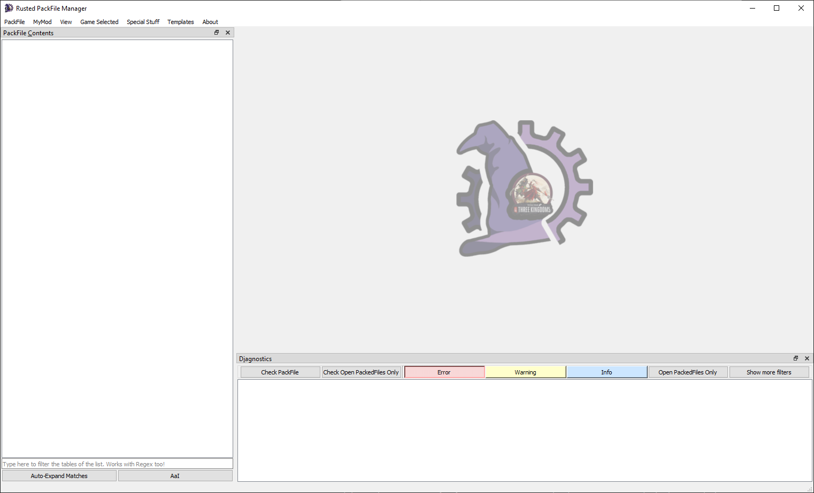
This is Rusted PackFile Manager, a.k.a. RPFM, a modding tool for modern Total War Games.
Before explaining what it does, a little explanation on how modding works in Total War games since Empire is due. Since Empire, most of the data of Total War games is in .pack files, packed together so it’s faster to read for the game. Those .pack files are containers. Inside them there are a ton of files with the actual data of the game. Some of those files are:
- DB Tables: contains most of the modable stuff of the game, like unit stats, building info,…. They are always in the folder
db/whatever_tables/table_file. - LOCs: contains the actual text you see on the screen when playing the game. Yeah, all those letters are not unicorn magic. It’s hard to believe, I know, but it’s true.
- Lua/Txt/Xml/…: plain text files. Not rocket science.
- RigidModels: the files with the actual 3D models of almost everything you see in the game, like units, monsters,….
- Images: icons, textures, etc….
Now, how it’s modding done in modern Total War Games? By creating a mod Pack, adding some of those files, changing them, and then telling the launcher to use that mod with the changes you did. Simple isn’t? Now, what is RPFM? It’s a program that let’s you create and edit those Packs, allowing you to edit the tables, locs,… inside them too. That’s more or less what it is.
But hey, isn’t this familiar? If you have modded a modern Total War game, yep. RPFM started as a complete reimplementation in Rust and Qt5 of the old PackFile Manager, because PFM it’s slow, buggy, and was unmaintained for more than half a year before someone picked it up, but it grew past it. If you’ve used PFM before, you can see it has a similar UI, and most of the features are in the same place, or close by. It’s done that way to make it easier to use for modders coming from PFM.
So, you want to give it a try? Then read the section, as without it most of the Advanced Features RPFM has are disabled. And remember, you can always access this documentation by clicking on the
Open RPFM Manual at the bottom right of the screen.
Initial Configuration
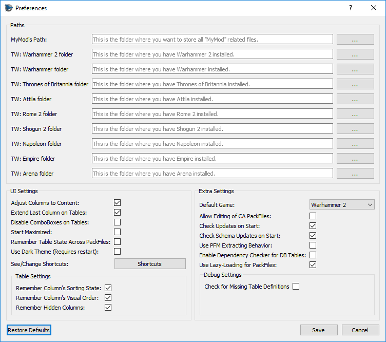
After we start RPFM for the first time, we have to configure a couple of things.
First, it should promt you to update your schemas. Hit yes. Schemas are files used to be able to edit tables, so you need them. Just remember you should always have them up-to-date.
Then, we need to go to Pack/Settings, and the window above this will popup. It seems like a lot of new stuff to know, but it’s really simple. First the paths:
Game folder: These are the folders where your games are. Not where /data is, but WHERE THE .EXE IS!!! RPFM uses them for plenty of things, so remember to set them for the games you have.Assembly Kit folder: These are the folders where the Assembly Kit for each game is installed, if any.MyMod's folder: it’s the path where your MyMod will be stored. MyMod are explained in a later chapter of this documentation, so for now you just need to know that it’s a path RPFM will use to store stuff for your mods. Set it pointing to an empty folder.7-Zip Folder: if you have 7-Zip installed, put here the folder where the 7-Zip exe is. This is needed to support compression. Without it, if you try to compress a Pack, it’ll fail.
Next, all those checkboxes. You can get an explanation about what they do just by hovering them with the mouse, like this.
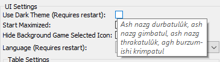
Next, the Text Editor button. This controls all the settings relative to the text editor, including his theme.
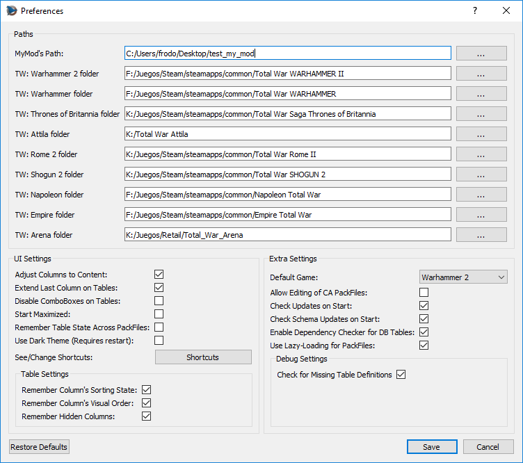
And finally, the Shortcuts button. Hitting it will open the Shortcuts window, where you can see and edit all the shortcuts currently used by RPFM.
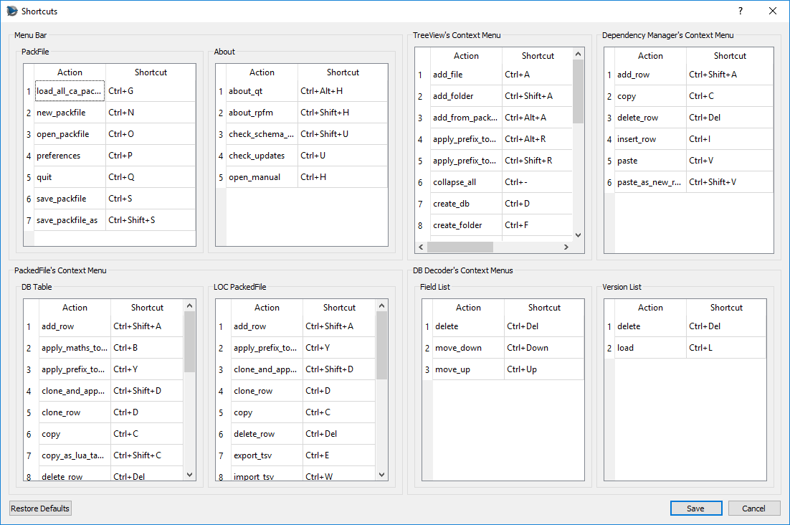
Just keep in mind that some of the shortcuts are applied when the program starts, so you’ll have to close and re-open RPFM for the changes to take effect.
When you’re done with the settings, just hit Save. You can restore them to the defaults with the button of the left (same for the shortcuts with their Restore Defaults button). One thing to take into account is that, if any of the paths is invalid, RPFM will delete it when hitting Save.
Now the last step. This is optional, but recommendable and it requires you to have the Assembly Kit for your games installed. We have to go to Special Stuff and, for each game we have, hit Generate Dependency Cache. This will create a special file that will help RPFM with reference data for table columns. It’s not enabled for Empire and Napoleon for now, but it should work for every other game.
With that, we have completed the initial configuration. So now that we’re done configuring RPFM, let’s take a look at the features it has to offer.
Buttons and What They Do
In this chapter we will check every freaking general use button and hidden action RPFM has (PackedFile-specific actions are in their respective chapter), so you don’t have to ask what they do. Just remember that, in addition to this chapter, you can hover with the mouse over almost every button in RPFM and in the status bar at the bottom will appear a short message explaining what the button do.
Ere we go!
Menu Bar
First, the top Menu bar. It has five menus in it, that’ll be explained in the following chapters. But to give you an idea of what we have:
Pack: It’s where all the basic stuff likeNew,OpenandSaveis. Pretty straightforward.MyMod: It’s where all the stuff related with the use of theMyModfeature is.View: It’s where you can hide/show certain panels of the UI.Game Selected: It’s where you select the game you are modding the current Pack for if RPFM failed to select it for you.Special Stuff: It’s where weird stuff goes.Tools: It’s where specialized tools, like the faction painter and the unit editor, go.About: It’s where you go when you want to read this documentation, check the Patreon, or check what version of RPFM you have.Debug: Stay away from this. And now, let’s begin!
PackFile Menu
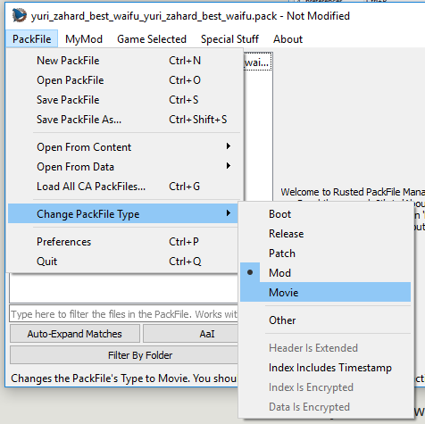
Here, we can find the basic actions:
New PackFile: Creates a new PackFile outtanowhere.Open PackFile: Opens one or more PackFiles in RPFM.Save PackFile: Saves the changes done in a PackFile to disk.Save PackFile As: Saves the current PackFile with another name.Settings: Open the Settings window.Quit: Makes you enter in a lottery. Seriously.
And some more… specific ones:
Install: Copies the currently open PackFile to the data folder of the game.Unistall: Removes the currently open PackFile from the data folder of the game.Open Recent…/xxx.pack: Open a recently open PackFile.Open From Content…/xxx.pack: Open the selected PackFile from the Content folder (Workshop mods) of the game. Requires the game’s path to be configured.Open From Data…/xxx.pack: Open the selected PackFile from the Data folder of the game. Requires the game’s path to be configured.Open From Autosave…/xxx.pack: Open the selected PackFile from the Autosave folder. The autosaves are Per-Pack and sorted from newest to oldest, so if you want to load the last autosave done, pick the first one.Load All CA PackFiles: Creates a fake PackFile in memory and tries to load into it all the data from every Vanilla PackFile of the game. Keep in mind that this takes a while. Disabled if you have dependencies loaded in the dependencies panel.Change PackFile Type: Allows you to change the open PackFile’s Type and configure some options for it.
About the PackFile Types, it’s what the game uses to load in order all the data of the game. There are the following types, in the order the game will load them:
Boot: Used by boot.pack. Not useful for modding. First to load.Release: Used by most of CA PackFiles. Not useful for modding.Pactch: Used by some CA PackFiles, specially in Shogun 2 and older games. Not useful for modding.Mod: Used by most mods. This is the one you’ll mostly use.Movie: Used by some CA PackFiles and some specific mods. Useful for modding. Last to load.Other: Something for RPFM to categorize unrecognized types. Never use it.
There are also a few more options to configure a PackFiles under this menu:
Header Is Extended: The header of the PackFile is extended (only seen in arena).Index Includes Timestamp: There is a timestamp, maybe a Last Modified Date in the index of the PackFile.Index Is Encrypted: The index of the PackFile is encrypted.Data Is Encrypted: The data of the PackFile is encrypted.Data Is Conpressed: The data of the PackFile is compressed.
About these options, just take into account that any PackFile with any of these options enabled (except Data Is Compressed) will NOT BE RECOGNIZED as a mod by the launcher. And RPFM doesn’t support saving PackFiles with Index Is Encrypted, Data Is Encrypted or Header Is Extended enabled.
And, if you don’t enable Allow Editing of CA PackFiles, RPFM will not let you save Boot, Release or Patch PackFiles.
And with that, we finish the PackFile Menu. Next, the MyMod menu.
MyMod Menu
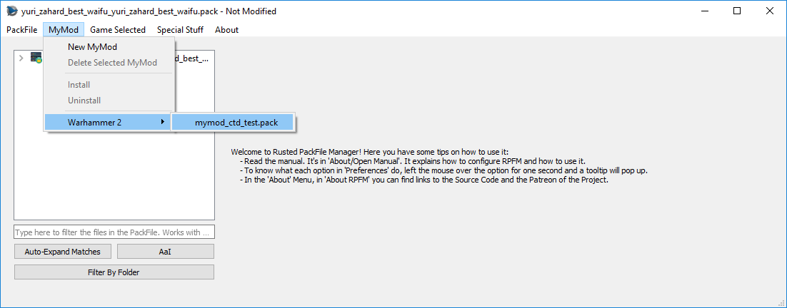
MyMod is a feature to help modders keep their mod’s data organized. The system started as an almost 1:1 clone of PFM’s MyMod feature and expanded from there, so it should be easy to use for veterans too.
For those new to the concept, remember that MyMod folder we set in the settings? When we create a MyMod, in that folder will be created a folder for the game the mod’s for (if it didn’t exist before), and inside that there will be a PackFile and a folder, both with the name of your mod. Each time you extract something from the PackFile, it’ll be automatically extracted in his folder, mirroring the structure it has in the PackFile. For example, extracting a table will result in the table being extracted at mymod_folder/db/table_name/file. Adding Files/Folders from the MyMod folder will also add them mirroring the path they have. For example, adding a file from mymod_folder/db/table_name/file_ will add the file in PackFile/db/table_name/file.
This makes easier to keep track of the mod files, and you can even put that folder under .git, or any other version control system, as you can have an unpacked mod that you can pack with a single click (well, a few clicks).
The MyMod Menu has the following buttons:
Open MyMod Folder: Opens theMyModfolder in your default file explorer.New MyMod: It opens theNew MyModDialog. It’s explained under this list.Delete Selected MyMod: It deletes the currently selectedMyMod. This cannot be undone, so you’ll got a warning before doing it.Import: Import the content of theMyModfolder of the currently openMyModPackFile into said PackFile.Export: Extract the currentMyModPackFile into itsMyModfolder.XXX/yourmod.pack: Open your previously createdMyModto edit, delete, install,…. whatever you want, baby!
When we click on New MyMod, the following dialog will appear:
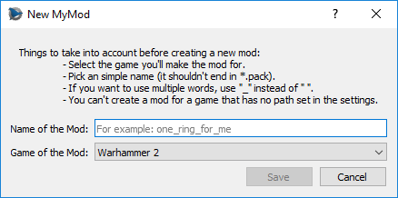
Here you can configure the MyMod with the features you want. Once you’re done, hit Save and your new MyMod will be created and opened.
And lastly, a couple of aclarations:
- To be able to use
Import/Exportyou need to have yourMyModopen. - Only
MyModPackFiles opened fromXXX/yourmod.packwill enjoy theMyModfeatures, like keeping the paths when adding/extracting files. Manually openedMyModPackFiles will be treated as regular PackFiles.
View Menu
In this menu you can hide/show certain panels of the UI:
PackFile Contents: That thing on the left with files and folders on it.Global Search: A panel to search stuff through the entire open PackFile.Diagnostics: A panel to show diagnostics results of the entire open PackFile.Dependencies: A panel to show all the currently loaded dependencies.References: A panel to show references found with theFind Referencesfeature.
Game Selected Menu
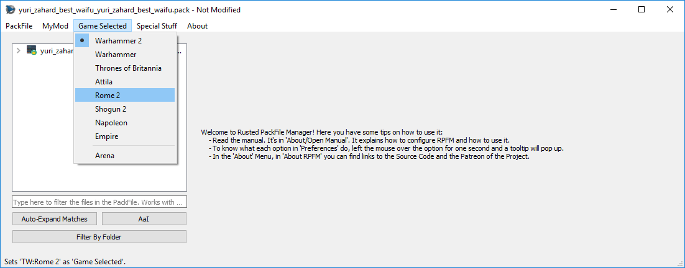
In this menu you can change the currently selected game. When opening PackFiles, RPFM tries to be smart and auto-select a game, but there are some PackFiles that are the same between games (for example, Attila and Warhammer 1 PackFiles are identical), so… just make sure the right game is selected after opening a PackFile, as that affects how many parts of the program work. The complete list of supported games is:
Warhammer 3: Full Support.Troy: Full Support.Three Kingdoms: Full Support.Warhammer 2: Full Support.Warhammer: Full Support.Thrones of Britannia: Full Support.Attila: Full Support.Rome 2: Full Support.Shogun 2: Full Support.Napoleon: Almost Full Support. MissingGenerate Dependencies Cachesupport.Empire: Almost Full Support. MissingGenerate Dependencies Cachesupport.Arena: Read-Only Support for PackFiles. Incomplete schema.
Also, at the top we have a couple of convenient buttons to open certain folders on the default file manager of your system:
Launch Game Selected: A quick shortcut to launch the currently selected game.Open Game's Data Folder: Open your currently selected game’s data folder, if it has his path configured in the settings.Open Game's Assembly Kit Folder: Open your currently selected game’s assembly kit folder, if it has his path configured in the settings. Only for Rome 2 and later games.Open RPFM's Config Folder: Open the config folder of RPFM, which contains configs, shortcuts, schemas, crashlogs, porn,….
Special Stuff Menu
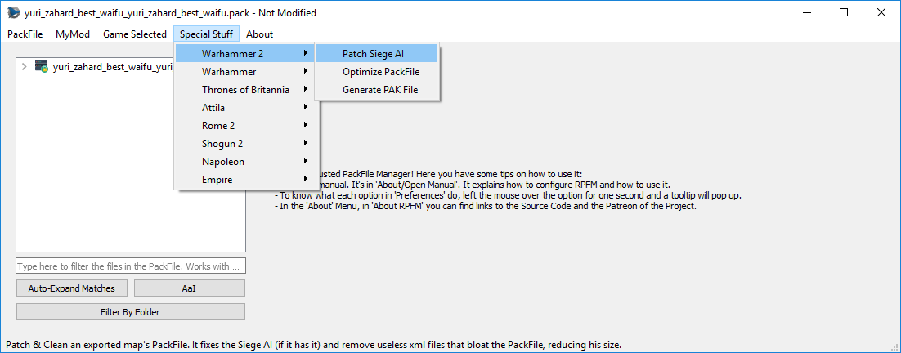
This menu contains… special features implemented for specific games. Basically, any feature that doesn’t really fit in any other place goes here. Here we have:
Patch SiegeAI: used in Warhammer 1 & 2 for creating siege maps that the AI can handle. Basically, make your map with the stuff required for the AI to work, and then patch his PackFile with this.Optimize PackFile: reduces the size of your PackFile and increase its compatibility with other mods by cleaning certain stuff on your packfile:- DB: Removes unchanged rows from vanilla. If table is empty, it removes it. Ignore files called the same as the vanilla ones (unless you disable that in the settings).
- Loc: Removes unchanged rows from vanilla.
- Xml: Removes xml files under the
terrain/tilesfolder, as those are leftovers of Terry’s exports..
Generate Dependencies Cache: generates a cache used for things like dependency checking, diagnostics, …. Doesn’t work for Empire and Napoleon, yet.Live Export: Exports all script and ui files from the open Pack to the game’s data folder with a random number attached, and puts all path mappings into a file in the exe’s folder. That way you can, ingame, load that file and it should allow you to load said scripts and ui files without restarting the game.
There’s also a Rescue PackFile feature that you SHOULD NOT USE UNLESS INSTRUCTED.
Tools Menu
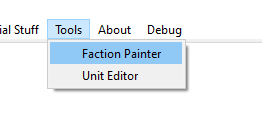
Menu with custom tools integrated in RPFM:
Faction Painter: Allows you to change the colours of all factions in the game.Unit Editor: Allows you to edit units.
About Menu
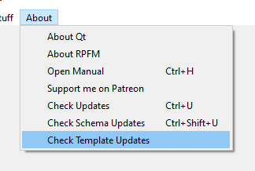
Pretty simple and straightforward menu:
About QT: Shows info about the version of Qt (the framework RPFM uses for the UI) in use.About RPFM: Shows info about the version of RPFM in use, and the credits.Check Updates: Checks if there is a newer version of RPFM available.Check Schema Update: Checks if there is any newer version of RPFM’s Schemas available and downloads it.Check TW Autogen Update: Checks if there is any newer version of the TW Autogen lua repo available and downloads it.
The Schemas I talked in the last point are what allows RPFM to decode and open the tables of all the supported games. Newer schemas means more tables to open. It’s very common that after an update a few tables change his structure and are no longer decodables. To get them to work again, the schema has to be updated.
And that’s all for the top Menu Bar. Now we’ll take a look at the thing you’re going to use the most (or almost the most): the TreeView.
Debug Menu
Stay away from this.
PackFile TreeView
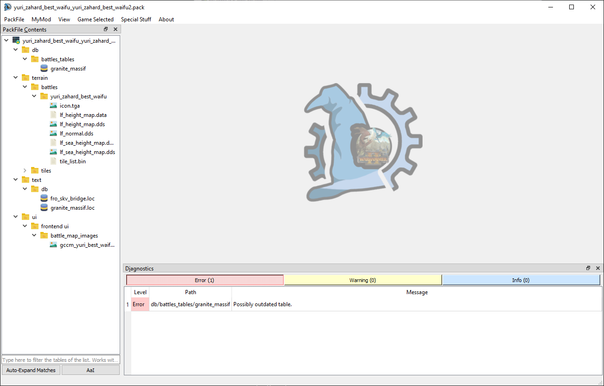
That thing on the left with folders and stuff is the PackFile’s TreeView. That’s where all the files inside your PackFiles will show up. If you don’t like it there, it can be moved elsewere, or even closed. When you Right-Click on any of them, this context menu will show up:
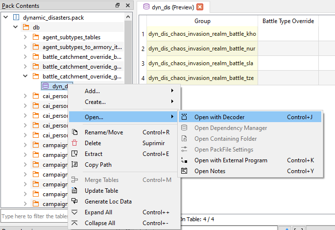
These are the actions you can use to alter the PackFile. Each one of them has a hotkey, in case you’re a lazy bastard. These are all the actions in the menu:
Add…/Add File: Allows you to add one or more files to the PackFile. If TSV files are detected, RPFM will try to import them as tables/locs.Add…/Add Folder: Allows you to add a folder and all his files to the PackFile. If TSV files are detected, RPFM will try to import them as tables/locs.Add…/Add from PackFile: Allows you to add files or folders from another PackFile to your PackFile. Just, select whatever you want to add, double click it and it’ll be added to your PackFile, keeping his path.Create…/Create Folder: Allows you to create an empty folder. Due to how PackFiles work empty folders are not saved so, if you want to keep the folder, add a file to it. Supports relative paths.Create…/Create AnimPack: Allows you to create an empty AnimPack.Create…/Create DB: Allows you to create an empty DB Table.Create…/Create Loc: Allows you to create an empty Loc PackedFile. You can create his relative path too writing something likefolder1/folder2/fileinstead of just the file name.Create…/Create Portrait Settings: Allows you to create a Portrait Settings file. It can be initialized with data from the open mod.Create…/Create Text: Allows you to create an empty text file. ANY TEXT FILE (including lua, xml,…). You can create his relative path too writing something likefolder1/folder2/fileinstead of just the file name.Create…/Create Quick File: Allows you to create a file based on the context. The current contexts where this works are:db/x_tables: It creates a new empty db table of the last version supported by the game selected.text/: It creates a loc file.scripts/: It creates a LUA script.variantmeshes/variantmeshdefinitions/: It creates a variantmesh file.
Open…/Open with Decoder: Allows you to open a table in thePackedFile Decoder. Only used to decode new tables, so…. You shouldn’t touch this.Open…/Open Dependency Manager: Allows you to open the list of dependencies included in the PackFile. Check the next chapter to learn what thisDependency Managerthing is about.Open…/Open Containing Folder: Allows you to open the folder where your open PackFile is (if it’s on disk) with the default file manager of your system.Open…/Open PackFile Settings: Allows you to open the PackFile-specific settings of the currently open PackFile.Open…/Open with External Program: Allows you to open a PackedFile with an external program. For tables and locs, some internal magic is done so they’re openable in excel/calc/the program your tsv files open with.Open…/Open Notes: Allows you to open a Notes panel, for writing random stuff related to the PackFile.Rename/Move: Allows you to rename/move whatever is selected, except the PackFile.Delete: Allows you to delete whatever is selected. If the PackFile is selected, it removes every file from it.Extract: Allows you to extract whatever is selected out of the PackFile. If whatever you selected is compressed/encrypted, RPFM will decompress/decrypt it before extracting, so the resulting file is usable.Copy Path: Allows you to copy the selected item’s path to the clipboard.Merge Tables: Allows you to merge multiple DB/LOC Tables into one.Update Table: Allows you to update the structure of a table to the latest one one used by the game selected.Generate Loc Data: Allows you to generate a list of missing loc entries for your mod.
Additionally, with the shortcuts Ctrl++ and Ctrl+- you can expand/collapse the entire TreeView.
Keep in mind that the availability of these actions depends on what is selected, and on the currently loaded schemas. For example, you can’t add anything if you have selected a PackedFile. Also, keep in mind that if there is a MyMod loaded, some of these actions may work different.
Also, when you add/modify a file, it’s marked in the TreeView with the following colour code:
- Green/Dark Green : added file.
- Yellow/Dark Yellow : modified file.
- Magenta/Dark Magenta : added AND modified file.
This colour code is applied to the parents too, up to the PackFile, so you easily know what you changed since the last time you saved the PackFile.
And last, the TreeView Filter. It’s that thing with buttons at the bottom of the TreeView. It allows you to filter the contents of the TreeView by a pattern (Works with Regex!). The buttons below the filter bar where you write the pattern are:
Auto-Expand Matches: automatically expand all the matched folders/files. This combined with a ton of matches (empty pattern and +60k files in data.pack) can hang the program for a while, so be cautious on when do you use it.AaI: the case sensitive button. Not too much to explain here.
Dependency Manager
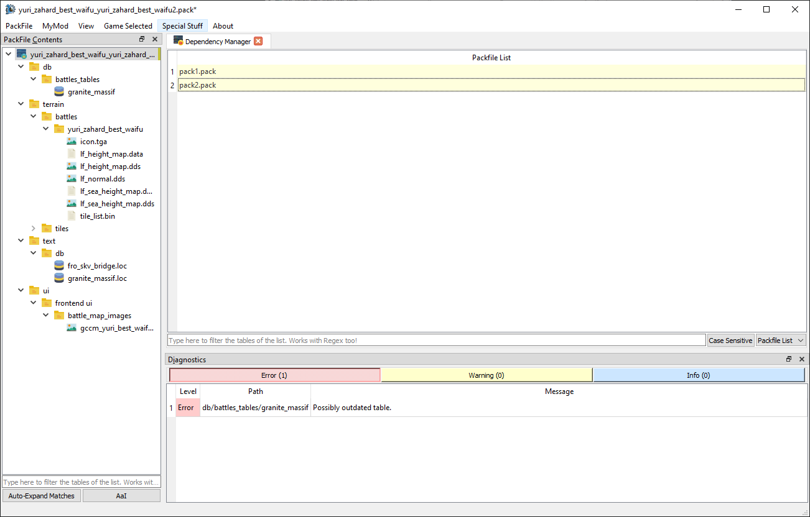
The Dependency Manager allows you to modify a special list of PackFiles saved inside your mod’s PackFile. When starting the game, the launcher will try to load the PackFiles in this list BEFORE your PackFile. If a PackFile is not found, it’ll be ignored. This list can be used to hardcode dependencies into your PackFile. In his Contextual Menu (right-click) you can find more or less the same commands of a DB Table.
PackFile Settings
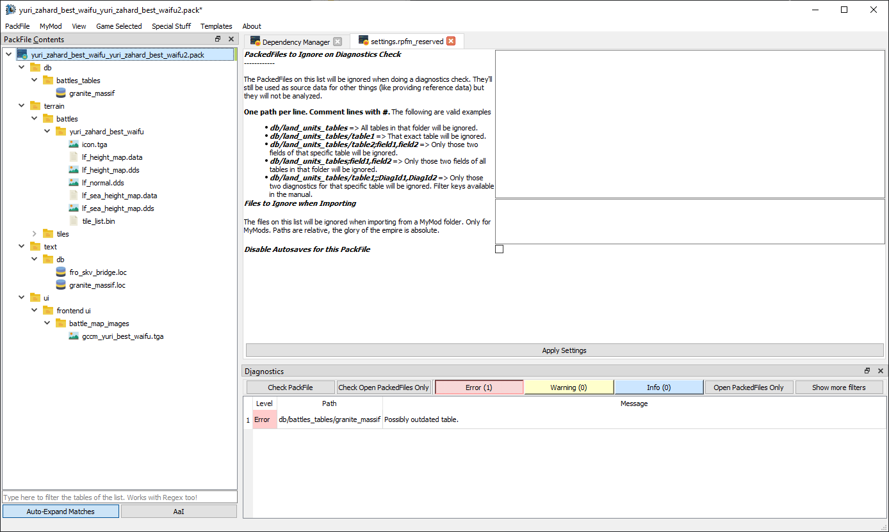
PackFile Settings are a list of PackFile-specific settings, that can change some of RPFM behaviors only for the currently open PackFile. They’re kept inside the PackFile, so every time you open that PackFile again, they will be re-applied. The list of settings goes as follows:
-
PackedFiles to Ignore on Diagnostics Check: The list of PackedFiles that will be ignored when performing a diagnostics check. You can ignore entire folders, individual PackedFiles, specific columns of individual PackedFiles and specific diagnostics on individual PackedFiles. The format is as follows:
db/land_units_tables=> All tables in that folder will be ignored.db/land_units_tables/table1=> That exact table will be ignored.db/land_units_tables/table2;field1,field2=> Only those two fields of that specific table will be ignored.db/land_units_tables;field1,field2=> Only those two fields of all tables in that folder will be ignored.db/land_units_tables/table1;;DiagId1,DiagId2=> Only those two diagnostics for that specific table will be ignored.- Comment lines should start with
#. - The diagnostic keys used to disable specific diagnostics are:
OutdatedTable=> Outdated table.InvalidReference=> Invalid reference.EmptyRow=> Empty row.EmptyKeyField=> Empty key field.EmptyKeyFields=> Empty key fields.DuplicatedCombinedKeys=> Duplicated combined keys.NoReferenceTableFound=> No reference table found.NoReferenceTableNorColumnFoundPak=> No reference Table/Column found.NoReferenceTableNorColumnFoundNoPak=> No reference Table/Column/Dependencies found.InvalidEscape=> Invalid escape.DuplicatedRow=> Duplicated row.InvalidLocKey=> Invalid Loc Key.TableNameEndsInNumber=> Table Name ends in number.TableNameHasSpace=> Table name has space.TableIsDataCoring=> Table is data-coring.FieldWithPathNotFound=> Path/File in Field not found.BannedTable=> Banned Table detected.ValueCannotBeEmpty=> Value Cannot be Empty.InvalidDependencyPackName=> Invalid Dependecy PackFileInvalidPackName=> Invalid Pack NameDatacoredPortraitSettings=> Datacored Portrait Settings file.InvalidArtSetId=> Invalid Art Set IdInvalidVariantFilename=> Invalid Variant FilenameFileDiffuseNotFoundForVariant=> File Diffuse not found for Variant.
-
Files to Ignore when Importing: Paths here will be ignored when importing into a MyMod.
-
Disable Autosaves for this PackFile: For big PackFiles.
Notes
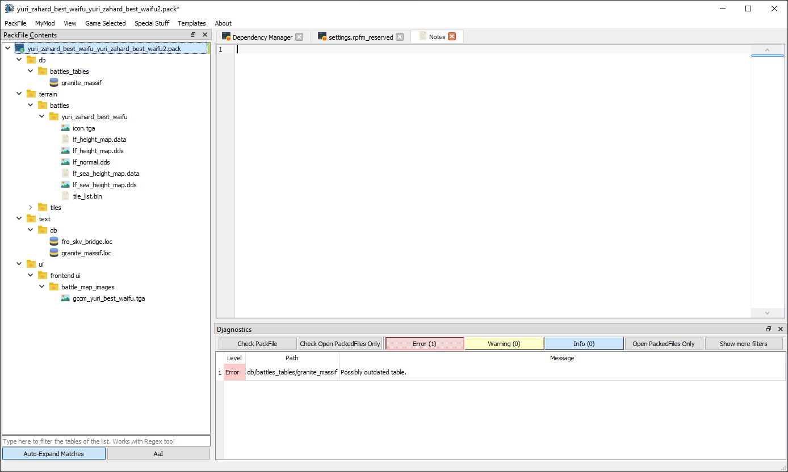
Notes is a system of simple notes stored in the PackFiles. It’s just a way to keep non-standard things (like “this column is for X, remember it when changing Y!”) in your PackFiles. You can have one note per PackFile. Use it for whatever you want. For file-specific notes, use the Quick Notes system.
Global Search
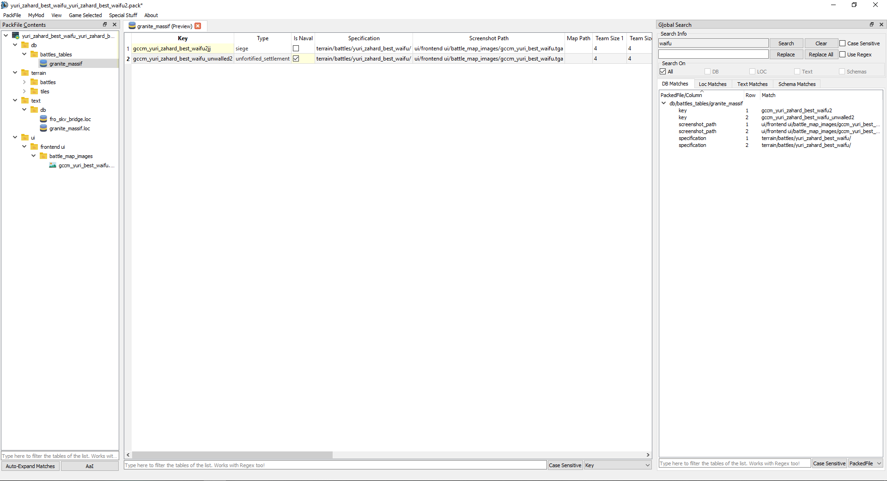
Global Search allows you to perform a simple search (accepts Regex) across every DB/Loc/Text file inside your PackFile (and the schema of the currently selected game), providing you with a filterable list of results in the right of the screen.
Pretty straightforward, just some notes:
- The search field will turn red/green depending if your text is a valid regex or not (if you enabled the regex option).
- Schema fields are not replaceable.
Diagnostics Panel
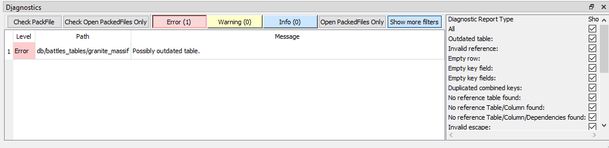
Diagnostics panel allows you to quickly identify possible problems in your mod, so you can fix them before they’re reflected in-game.
It’s pretty simple. From left to right:
Check PackFile: Performs a diagnostics check over the entire PackFile. If the relevant settings are enabled, this is done automatically on PackFile opening too.Check Open PackedFile: Performs a diagnostics check over the open PackedFiles, leaving the results of the other PackFiles as they are.Error: Enable showing error diagnostics.Warning: Enable showing warning diagnostics.Info: Enable showing info diagnostics.Open PackedFiles Only: Filter the diagnostics list to show only the diagnostics relevant to the open PackedFiles.Show more filters: Shows a toggleable list of per-diagnostic filter, for more granular filtering.
To know more about what each diagnostic means, hover the mouse over them and you’ll get an explanation of what it means. Also, double-clicking them will led you to the relevant place where they are being detected.
Also, something to note: while most diagnostics are automatic (they work without any setup needed), lua diagnostics (diagnostics to check if db keys in script are correct) need some setup by the modder. Specifically, the modder needs to write the following comment in the line above the variable, replacing table_name and column_name with the name of the table and column where that key should be:
--@db table_name column_name [key=0,value=1]
Here are some examples with all the variable formats supported by these diagnostics:
--@db battles key
hb = "chs_wastes_mountain_a_01"
--@db battles key
hb = { "chs_wastes_mountain_a_01", "chs_wastes_mountain_a_01" }
--@db battles key 0,1 (this checks both, key and value)
hb = { "chs_wastes_mountain_a_01" = "chs_wastes_mountain_a_01", "chs_wastes_mountain_a_01" = "chs_wastes_mountain_a_01" }
--@db battles key 0 (this checks only the keys)
hb = { "chs_wastes_mountain_a_01" = "chs_wastes_mountain_a_01", "chs_wastes_mountain_a_01" = "chs_wastes_mountain_a_01" }
--@db battles key 1 (this checks only the values)
hb = { "chs_wastes_mountain_a_01" = "chs_wastes_mountain_a_01", "chs_wastes_mountain_a_01" = "chs_wastes_mountain_a_01" }
--@db battles key
hb = {
"chs_wastes_mountain_a_01",
"chs_wastes_mountain_a_01"
}
--@db battles key 0,1 (this checks both, key and value)
hb = {
"chs_wastes_mountain_a_01" = "chs_wastes_mountain_a_01",
"chs_wastes_mountain_a_01" = "chs_wastes_mountain_a_01"
}
--@db battles key 0 (this checks only the keys)
hb = {
"chs_wastes_mountain_a_01" = "chs_wastes_mountain_a_01",
"chs_wastes_mountain_a_01" = "chs_wastes_mountain_a_01"
}
--@db battles key 1 (this checks only the values)
hb = {
"chs_wastes_mountain_a_01" = "chs_wastes_mountain_a_01",
"chs_wastes_mountain_a_01" = "chs_wastes_mountain_a_01"
}
Dependencies Panel
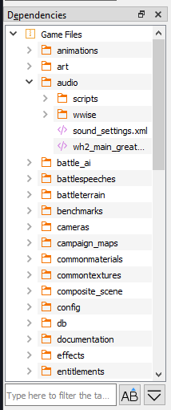
Dependencies panel allows you to quickly access any vanilla/parent file from RPFM, without having to load it to an open PackFile. It also allows you to import them to the currently open PackFile, and extract them to the filesystem. Only works if the dependencies cache has been generated.
References Panel
References panel allows you to list all references to a particular value found in both, your PackFile, and any loaded dependencies. To populate it, use the “Find References” table feature.
Quick Notes
If you right-click in a file tab, and hit “Toggle Quick Notes”, you can access the Quick Notes panel. This panel allows you to write notes that will always show up when you open files under a certain path. It’s useful for TODO notes, or for documenting file-specific workarounds.
Editable Files
As explained before, RPFM can not only edit the PackFiles of modern Total War Games, but it can also edit the Files inside them (PackedFiles, or just Files) without the need of extracting them. Ín this section we’ll see what PackedFiles can RPFM see/edit.
DB Tables
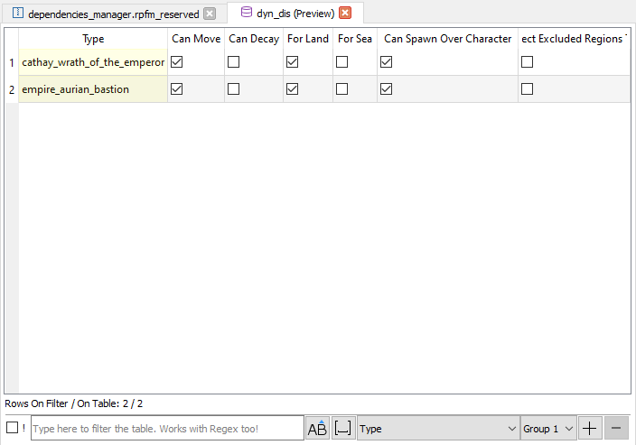
DB Tables are where most of the moddable data of the games is. For example, unit stats, faction colors, buildings info,… RPFM has a complete integrated editor for them. The screenshot above is how a DB Table looks in RPFM when opened.
The editor includes cross-table references, which means that, if one column references another table, you’ll get a combo when editing that column with data to input from the other table. Also, if you hover over the header of any column that references another table, is referenced on another table, or has a description in the schema, you can see in the tooltip the column’s special info.
Key columns are also marked with a slightly yellow background for recognition.
All columns are also movable, so you can rearrange them however you want, and numeric columns (except long integer columns) have a numeric-only editor. And you can sort the table by one column one way or another, or remove the sorting with a third click in the column title.
At the bottom of the window you have a real-time filter. Select the column you want to use to filter, if you want it to filter as Case Sensitive, and just write and see how the table gets filtered as you type. It works with Regex too. For example, the following will only show up the rows that contain in their Key column v_b or fake:
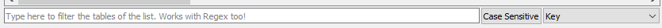
Here you have a Regex Cheatsheet in case you want to use more complex filters: https://www.cheatography.com/davechild/cheat-sheets/regular-expressions/
Also, you can add more filters with the + button, and make multi-column filters. You can even have multiple groups of multi-column filters to more accurate filters.
Now, with the Right-Click (or Contextual) Menu:
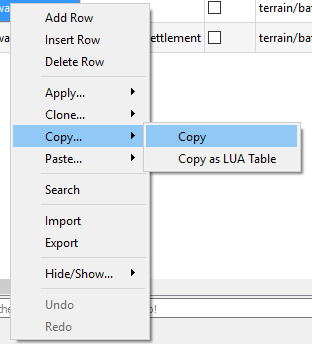
These are all the actions available for DB Tables:
Add Row: Appends an empty row at the end of the table.Insert Row: Inserts an empty row after every row with a selected cell.Delete Row: Uses the computational power of your GPU to mine cryptocurrencies. Joking, it deletes any row with a selected cell.Delete Filtered-Out Row: It deletes any row not in the current filter.Clone…/Clone and Insert: Creates a duplicate of every row with a selected cell and inserts the duplicate just below the original row.Clone…/Clone and Append: Creates a duplicate of every row with a selected cell and appends the duplicates at the end of the table.Copy …/Copy: It copies whatever is selected to the Clipboard, in a format compatible with Excel, LibreOffice Calc and others.Copy …/Copy as LUA Table: It copies the entire table as a Lua “Map<String, Vector<data>>” if the table has a key field, or as a series of Vectors if it hasn’t, ready to paste it in a script. For scripters.Copy …/Copy as filter value: It copies whatever is selected to the Clipboard, in a format which can be pasted in the filter input.Go To …/Go To Definition: If the first cell of the selection is a reference to another table, it tries to open the referenced table. If Dependencies cache has been generated, it’ll even open tables from data.pack or equivalent in read-only views.Go To …/Go To Loc Entry: It tries to open the loc file containing the loc entry relevant for the selected row, if exists. If Dependencies cache has been generated, it’ll even open locs from /data in read-only views.Paste: It tries to paste whatever is in the Clipboard to the selected cells. It does some clever things while pasting:- If only one cell was copied, it pastes it in all selected cells.
- If only a few cells of a row were copied, and the amount of copied cells equals the amount of selected columns, it pastes the first item in every cell in the first selected column, the second item in every cell of the second selected column,…
- If none of the above, it defaults to a normal paste.
Paste as New Row: It allows you to paste the contents of the clipboard as a new row, appended at the end of the table.Generate IDs: Allows you to generate a sequence of consecutive ids for the selected cells.Rewrite Selection: Allows you to rewrite the contents of a complete selection with whatever you want. It also allows for some limited numeric operations.Invert Selection: Inverse the selection state of all cells on the table.Reset Selection: Reset all selected cells to the value they had when the table was initially open.Resize Columns: Resize all the columns to fit their contents.Import TSV: Allows you to import a TSV file to the table, overwriting whatever the table currently has. IT’S NOT COMPATIBLE WITH PFM TSV FILES.Export TSV: Allows you to export the table as a TSV File, compatible with Excel, Calc….Search: Open the Search & Replace panel, that you can use to search any text pattern you want in the table, and replace it if you want. It works in combination with the filter, so you can even do more precise searches combining them!Sidebar: Open a sidebar where you can select what columns hide/show and freeze/unfreeze.Find References: Performs a reference search for the value in the cell.Rename References: Allows you to rename in cascade all references to a key at once.Patch Column Definition: Patches a column definition with extended data.Undo: Allows you to undo… almost every action done in the table. Even TSV Imports.Redo: Allows you to undo every undo action. This goes deeper into the rabbit hole…
Tables uses the same colour code for cells and rows as the TreeView. And that’s more or less what you can do with a DB Table.
Apart of these, the Del key in DB Tables acts as an Smart Delete key. This means depending on what you have selected when you press Delete it’ll delete:
- If you have selected random cells, it’ll delete their contents.
- If you have selected a full row , it’ll delete the row from the table.
- If you have a combination of both , it’ll delete rows where all cells are selected, and it’ll delete the contents of the cells where not all cells in a row are selected. Fancy.
One thing to take into account is that if you want to write multiple lines in a cell (for example, for multiple paragraphs in one single cell) you can write \\n and RPFM will take care of saving it properly, so you see multiple lines ingame. Same with \\t for tablulations. And yes, two bars, not one.
LOC PackedFiles
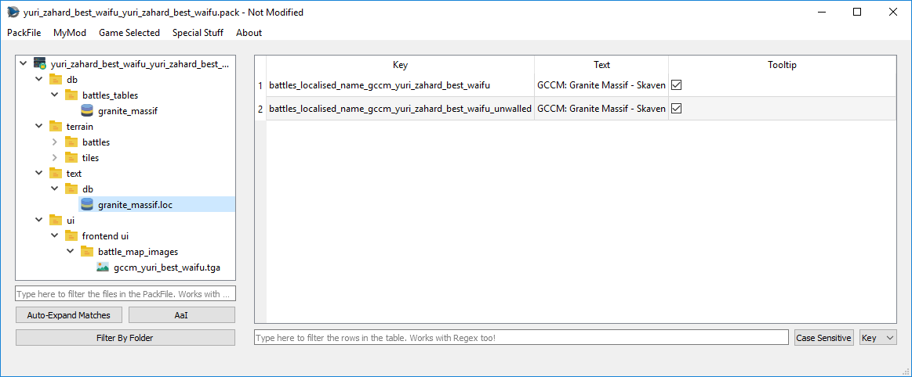
Loc PackedFiles are files that end in .loc, and contain most of the texts you see ingame. When you open them, you can see they work like a… DB Table. They are really an special type of table, so you can do to them exactly the same stuff you do can do to DB Tables. Loc PackedFiles uses the same colour code for cells and rows as the TreeView.
Text PackedFiles
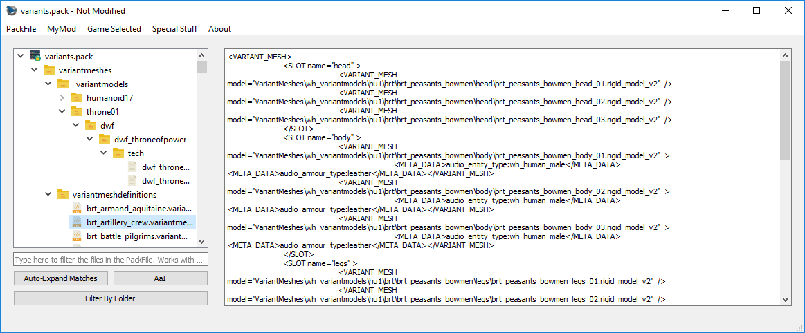
RPFM can open and edit a wide variety of Text PackedFiles, such as XML, HTML, LUA, TXT,.... It has native Undo/Redo support, Copy/Paste support, Syntax Highlighting… the normal things for a basic text editor.
Images
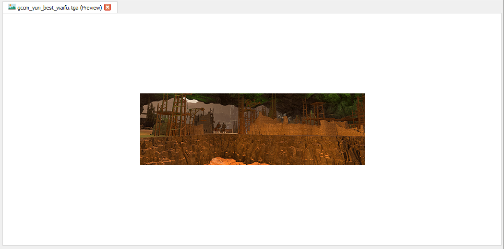
RPFM can open a variety of image formats, such as PNG, JPG, TGA, DDS (most of them)… Just select the image you want to see, and it’ll open in the right side of the window. If it doesn’t open, it’s a format it cannot (yet) open.
CA_VP8
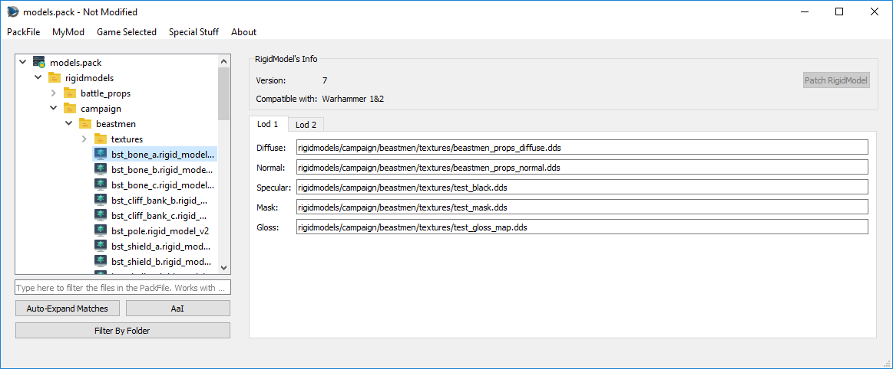
RPFM can decode the CA_VP8 video files CA uses in total war games, and convert them into VP8 IVF and back. Just press the button of the format you want, then press extract. Also, this is video only. No audio is converted.
AnimPacks
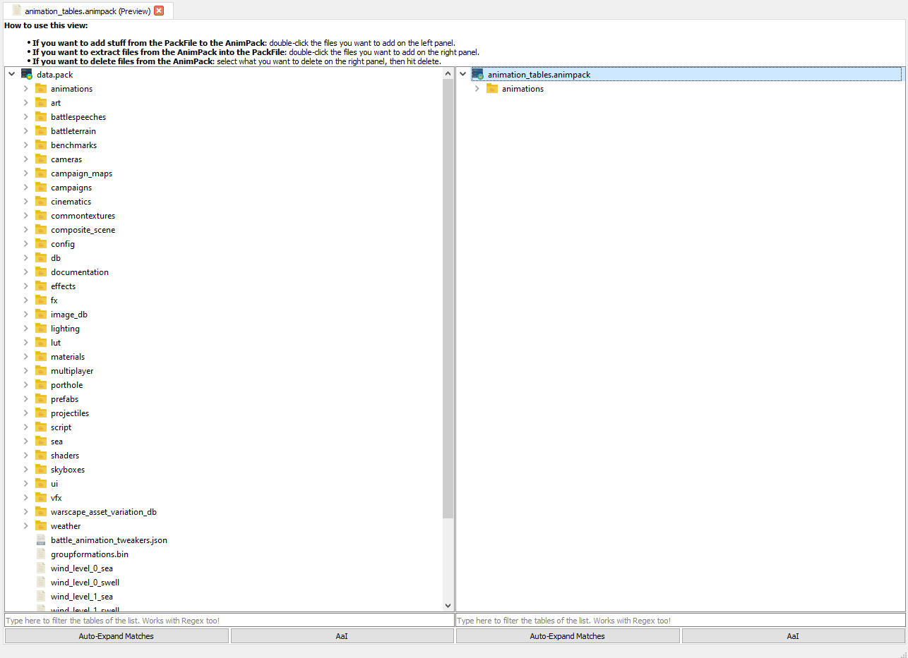
RPFM can open AnimPacks, and allows to add/remove files at will to/from them. The left view represents the currently open PackFile. The right view, your AnimPack.
- To add files to your AnimPack, just double-click what you want to add on the left view, and it’ll be added to the AnimPack on the right.
- To Extract files from your AnimPack into the PackFile, just double-click the files you want to extract on the right view, and they’ll be extracted into the left view.
- To remove files from the AnimPack, just select them and hit “Delete”.
NOTE: All add/extract operations are copies, not moves. This means the original file will still be there after being added/extracted.
AnimTables
AnimTables are DB-like tables with information about animations. Really, I’m not an expert on them. They’re shown in debug views. Remember to hit the save button at the bottom or they’ll not be saved.
AnimFragments
AnimFraments are DB-like tables with information about what animations use what units on what situations. Really, I’m not an expert on them. They’re shown in debug views. Remember to hit the save button at the bottom or they’ll not be saved.
MatchedCombat Tables
MatchedCombat Tables are DB-like tables with information about what animations use what units when they’re in matched combat with other specific units. I think. Really, I’m not an expert on them. They’re shown in debug views. Remember to hit the save button at the bottom or they’ll not be saved.
Portrait Settings
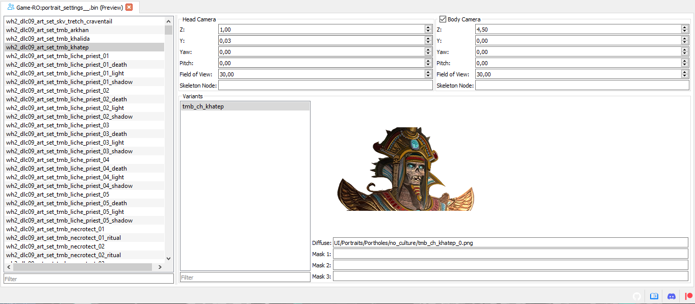
Portrait Settings are files that contain info about the different portraits (head/recruitment panel/details panel) a unit can use.
Audio files
You can listen to audio files. Only .mp3 supported. That’s all.
RigidModel files
These are the 3D model files used by the game. RPFM offers limited edition capabilities for them, thanks to a separate library by Phazer. Windows-only.
DB Decoder
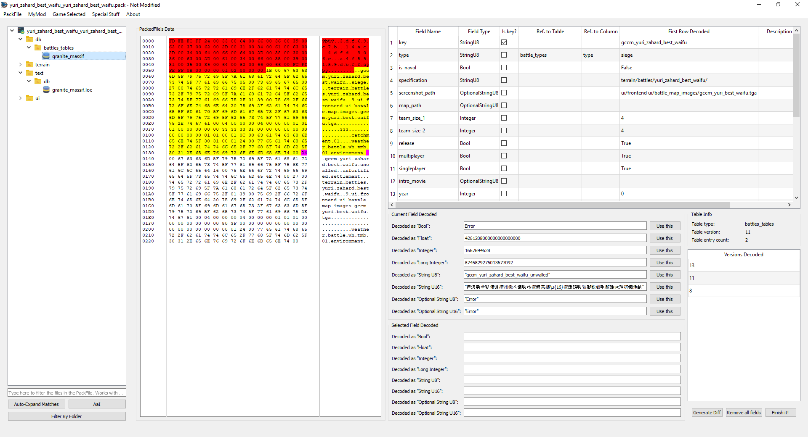
RPFM has an integrated DB decoder, to speed up a lot the decoding process of the definition of a table. It can be opened by right-clicking on a table file and selecting Open/Open with Decoder. Only works on tables.
The decoder screen is a bit complex so, like Jack the Ripper, let’s check it in parts, one at a time. Starting by the left we have this:
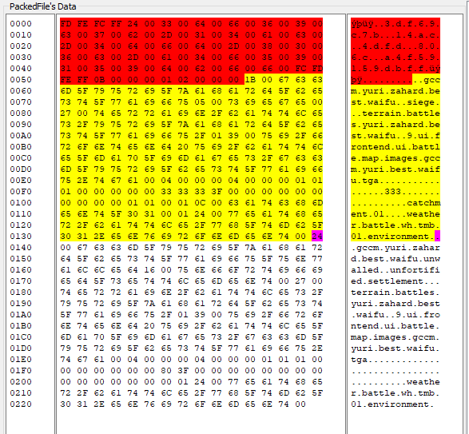
This is the PackedFile's Data view. It’s similar to a hexadecimal editor, but far less powerful, and it’s not editable. In the middle you have Raw Hexadecimal Data, and in the right, you have a Decoded version of that data. To make it easier to work with it, both scrolling and selection are synchronised between both views. So you can select a byte in the middle view, and it’ll get selected in the right one too. The colour code here means:
- Red : header of the table. It contains certain info about what’s in the table, like his uuid, amount of rows,….
- Yellow : the part of the table already decoded following the structure from the fields table.
- Magenta : the byte where the next field after all the fields from the fields table starts.
Next, to the right, we have this:
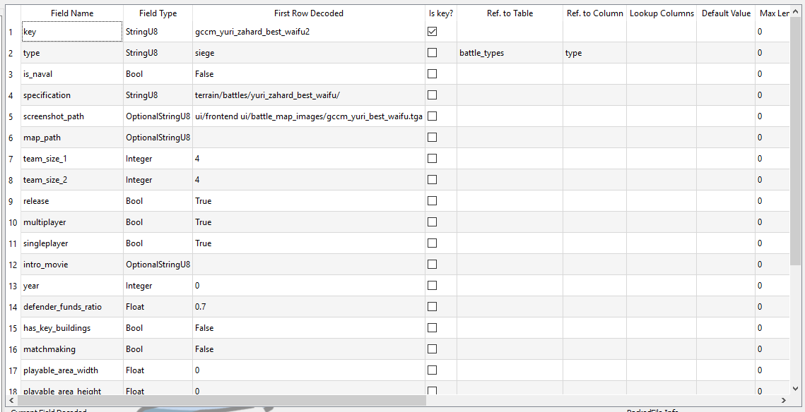
This is the Fields List. Here are all the columns this table has, including their title, type, if they are a key column, their relation with other tables/columns, the decoded data on each field of the first row of the table, and a Description field, to add commentaries that’ll show up when hovering the header of that column with the mouse.
If we right-click in any field of the table, we have these three self-explanatory options to help us with the decoding:
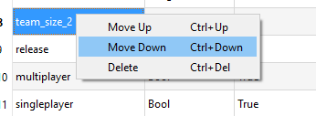
And finally, under the Fields List, we have this:
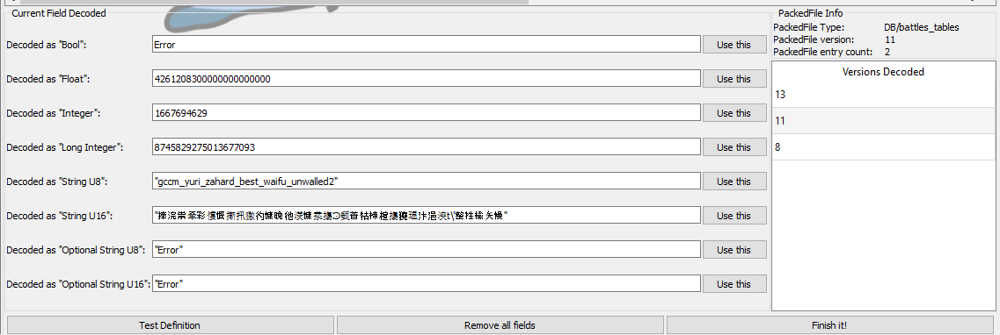
The Current Field Decoded will show up the field that starts in the magenta byte of the PackedFile's Data view, decoded in the different types the tables use. It’s use is simple: check what type makes more sense (for example, in the screenshot, it’s evidently a StringU8), and click the Use this button in his row. Doing that will add a field of that type to the Fields List, and it’ll update the PackedFile's Data View to show where the next field starts. Keep doing that until you think you’ve decoded the complete first row of the table, hit Finish It! at the right bottom corner, and select the table again. If the decoding is correct, the table will open. And that’s how I met your mother you decode a table.
Under Current Field Decoded we have Selected Field Decoded. It does the same that Current Field Decoded, but from the byte you selected in the PackedFile's Data View. Just select a byte and it’ll try to decode any possible field starting from it. It’s for helping decoding complex tables.
To the right, we have some information about the table, and the Versions List (a list of versions of that table we have a definition for). If we right-click in one of them, we can load that version (useful to have something to start when a table gets updated in a patch) or delete it (in case we make a totally disaster and don’t want it to be in the schema).
In the information of the table, the version number is only editable for version 0 tables. Usually, RPFM treats all versions as unique per-game, but version 0 really means no version, so in older games, like empire, there can be multiple “version 0” tables with different definitions. For that, when a version 0 table is decoded, you can set its version to be negative, which will act as an alternative definition for that version 0 table.
It’s only for Empire/Napoleon. Don’t use it in recent games.
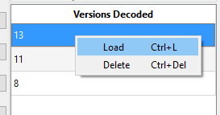
And at the bottom, we have:
Import from Assembly Kit: it tries to import the definition for this table from the assembly kit files. It tries.Test Definition: test the definition to see if it can decode the table correctly. If it fails, it’ll show a json version of the rows of the table that it could decode.Remove all fields: removes all decoded fields, returning the table to a clean state.Finish It!: Save theFields Listas a new definition for that version of the table in the schema. The definition is inmediatly available after that, so the changes can be used immediately.
DB Types
People have complained that the types used in the DB Decoder and, by extension, in the tables are not intuitive enough, so here is a little explanation to shut you up:
Bool: One byte. Can be 00 or 01.Float, orf32: 4 bytes that represent a floating point number. Can be really anything.Integer, ori32: 4 bytes that represent a signed integer (admits negative numbers). Can be really anything.Long Integerori64: 8 bytes that represent a signed integer (admits negative numbers). Can be really anything.StringU8: An UTF-8 String. It has an u16 (2 bytes) at the begining that specify his lenght, and then the String itself with each character encoded in one byte.StringU16: An UTF-16 String. It has an u16 (2 bytes) at the begining that specify his lenght, and then the String itself with each character encoded in two bytes.OptionalStringU8: Like a UTF-8 String, but with a bool before. If the bool is true, there is aStringU8after it. If it’s false, then there is nothing more of that field after it.OptionalStringU16: Like a UTF-16 String. but with a bool before. If the bool is true, there is aStringU16after it. If it’s false, then there is nothing more of that field after it.SequenceU32: It’s a table inside a table.
There are some extra types that RPFM doesn’t yet support for one reason or another:
OptionalInteger(This one may not exists): Like an Integer, but with a bool before. If the bool is true, there is aIntegerafter it. If it’s false, then there is nothing more of that field after it. Only seen in one table in Warhammer 2.
If you need more help to understand these types, please search on google.
Appendix
- Basic shortcuts (non-editable) for EVERY Table View provided by Qt:
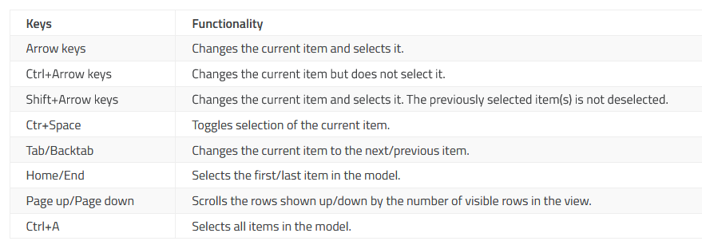
-
If RPFM crashes, it’ll generate an error log in his folder called “error-report-xxxxxxx.toml”. That file can help me find the problem, so if you want to help reporting the bug, send me that file too.
-
DON’T OPEN FILES WITH RPFM AND OTHER PROGRAMS LIKE PFM AND THE ASSEMBLY KIT AT THE SAME TIME!!!!! Just in case you don’t realise the problem, let me explain it: to not fill your entire RAM with data you probably aren’t going to need, RPFM only reads from disk when needed and what it needs. This means that, if you open the same file with another program, that program MAY LOCK YOUR FILE, CAUSING EITHER A CORRUPTED PACKFILE OR A VANISHED PACKFILE WHEN SAVING.
-
If you still want to do it, disable the
Use Lazy-LoadingSetting in thePreferencesand the entire PackFile will be loaded to RAM. Weird things may still happen, but if the PackFile is loaded to RAM, you can just clickSave PackFile As...and your PackFile will be saved properly.
Tutorials
This section contains a bunch of small tutorials on how to use some of the not-so-evident features of RPFM, so even if you’re familiar with RPFM, I recomend you give these a look, because you might be doing the same thing they explain in a more complicated-than-needed way.
How To Translate A Mod
There are three ways to translate a mod: the simple way, the advanced way, and the new way.
The Simple Way
It’s the one new modders tend to do, because it’s the easier one:
- Open the Pack.
- Open the Loc files.
- Manually translate the loc values.
- Save the Pack.
It’s not recomended because when the mod gets an update, you have to retranslate everything, or figure out a way to find the new/changed lines, translate those, then update your translation mod. And this can be a pain, and depending on how you do it, you can miss line changes leaving your translation working but partially outdated.
The Advanced Way
It’s the one people that have been hit by the problems of the simple way tend to do:
- Open the Pack.
- Extract all locs to TSV.
- Use some software to help you translate the files.
- Import the locs back.
- Save the Pack.
There are many variants of this, ranging from simple autotranslate everything with google (if you do this WITHOUT PROOFREADING AND FIXING THE TRANSLATION I wish you a really painful death), to advanced workflows to isolate new/changed lines and only update those.
The pros of this is translations are more easily updated and it’s easier to keep track of the changes. The cons are… that it’s more time-consuming.
The New Way
The new way is using RPFM’s integrated Translator. It’s really simple:
- Open the Pack you want to translate.
- Open the Translator (Tools/Translator).
- Translate the lines marked as Need Retranslation.
- Hit Accept.
- Save the Pack.
Why is this approach the recommended one? Because the translator does a lot of the heavy work for you, and fixes some problems that have historically plagued translations in Total War games. Specifically:
- It detects lines unchanged from the vanilla english translation, and translates them automatically using their official translation.
- When translating submods, it reuses translations from the parent mods if they exists and autotranslates lines reused from the parent mods using them.
- If you’re updating a translation:
- It detects lines which have been removed from the mod and marks them so you don’t need to translate them.
- It detects lines which have been altered on the mod, so you can update their translation.
- It detects lines which are new, and promps you to translate them.
- Due to the way the translation data is stored, it’s easy to share it with a team and collaborate on it.
This means, just by using it, you get:
- No more time wasted updating a translation. Just open the updated mod in the translator, hit accept, and done.
- No more lines changed in an update still using their old translation.
- No more lines with the same text using different translations, leading to mismatching terminology.
Additionally, these translations are used by TWPatcher to provide launch-time translation capabilities, meaning any launcher that uses TWPatcher (like Runcher) can automatically detect your mods, find translations for them, either online at the translation hub, or locally, and auto-apply them on runtime, fixing the dreaded no text when no english bug along the way. This means no more need to have 20 translation packs for your 20 mods!
How to use the Translator
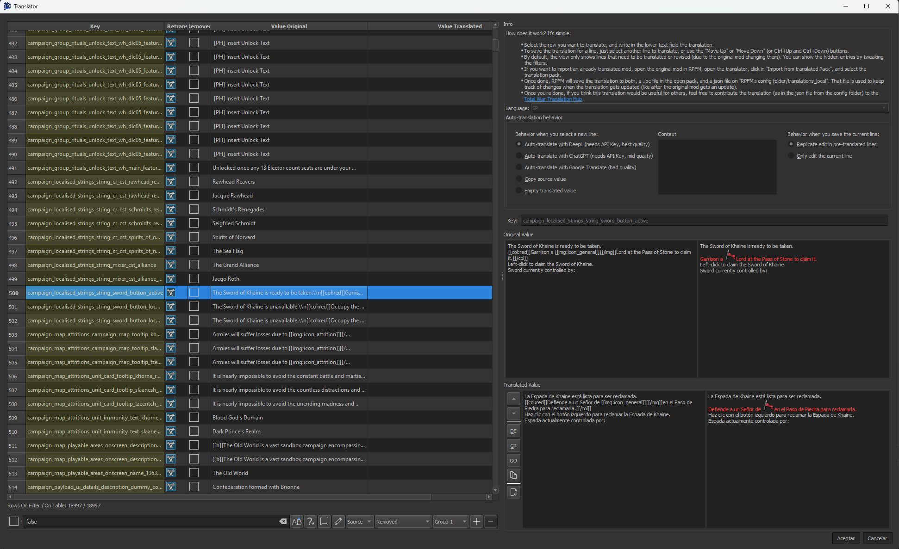
First, open the mod in the translator. The list of localisation lines in the mod is on the left, with the following structure:
- Key: Key of the loc line to translate
- Needs Retrasnlation?: If checked, the line needs to be translated, either because it’s a new line, or because it was previously translated, but the mod changed that line at some point.
- Removed: If checked, the line is no longer in use in the mod. The translator automatically hides these.
- Original Value: The text that’s in the mod in that line. Usually in english.
- Translated Value: The translated text for that line.
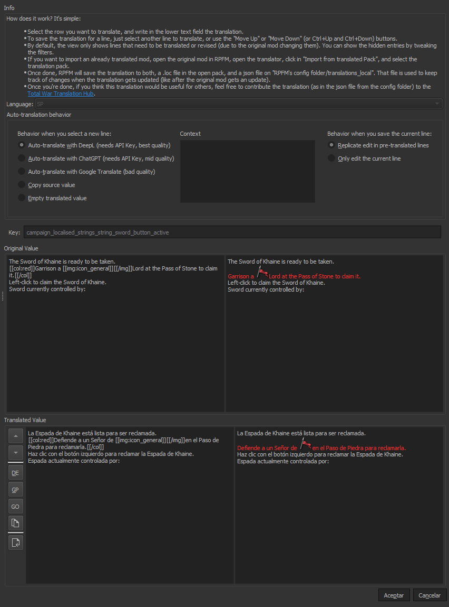
Next, the right side, where the configuration of the translator and the translation itself happens. At the top you have some instructions on how to use the tool and the language the translator is translating into, which is chosen based on which language you have the game on. Next is the Auto-translation behavior section, where you can configure how the translator acts every time you select/deselect a line from the list to translate:
- When you select a new line:
- Auto-translate with DeepL: it uses DeepL to automatically translate the line, providing rather high quality translations in general. To use this, you have to make an account in the DeepL Webpage, then generate an API Key, then set that API key in RPFM’s settings.
- Auto-translate with ChatGPT: it uses ChatGPT to automatically translate the line, providing translations ranging from medium quality, to absolute garbage. You can use the context panel to provide context to ChatGPT for the translation. To use it you need to generate a ChatGPT API Key, then set that API Key in RPFM’s settings.
- Auto-translate with Google Translate: it uses Google Translate to automatically translate the line, providing rather mediocre translations, but it’s better than nothing.
- Copy Source Value: just reuse the original english value for that line without translating it.
- Empty Translated Value: do nothing when selecting a new line. Just provide an empty field to make the translation yourself, or to load a translation to the preview panel and not save it afterwards.
- When you save the current line:
- Replicate Edit in Pre-Translated Lines: the translator by default searches for all the untranslated lines with the exact same original text as the one you’re translating and re-uses the same translation for them. Select this if you want it to also do the same for lines already translated.
- Only Edit the Current Line: fully disable the reusing of translations across lines with the same value.
After that there’s a key field, so you can see the full key of whatever you’re translating, and then there’s the Original Value and Translated Value sections, which are composed of four panels and a couple of buttons:
-
Original Value:
- Left Panel: original text with minimal formatting (\n and \t are replaced with their formatted variants).
- Right Panel: original text with full formatting. Here you can see icons, coloured text, links,… more or less how it looks ingame.
-
Translated Value:
- Buttons: button list to change to the previous/next line, or to perform one of the actions that usually happens when selecting a new line, but on demand.
- Left Panel: translated text with minimal formatting (\n and \t are replaced with their formatted variants). Here is where you can edit the translation.
- Right Panel: translated text with full formatting. Here you can see icons, coloured text, links,… more or less how it looks ingame.
So, how it works? You select a line, that line it’s loaded in the right side of the window, you translate it, then select another line,… and once you’re done, hit accept. That’s all. When saving the translation, RPFM saves it to two places:
- The Open Pack: it saves the entire translation into either
text/!!!!!!translated_locs.locortext/localisation.loc, depending on the game, so you can just use that pack translated. - The Disk: it also saves the translation data into
RPFM_CONFIG_FOLDER/config/translations_local/GAME_KEY/MOD_PACK_NAME/XX.json. This file is what RPFM uses to keep track of what changes in the translation, how to update it when the mod updates,… so don’t delete it. And this is also what TWPatcher uses to do the launch-time translation.
How to share a translation
This is simple. Just grab the json file of the translation, and upload it here. Why it’s good to share?
- In RPFM, the translator automatically searches for translations for mods in this repo. Meaning if someone translated a mod a year ago and uploaded it here, the Translator will update that translation and reuse it, so you don’t have to retranslate the whole mod again.
- When launched, TWPatcher automatically pulls this github repo and looks for translations on it to perform the automatic launch-time translation.
So basically, sharing it makes it future-proof. And allows others to use it withouh having to worry about submods, extra outdated packs, custom upcs… Because live can be easy, and the cost was just me spending some time setting this up.
So basically, it’s like doing it the Simple Way, but faster and with the benefits of the Advanced Way.
How To Optimize Your Mod
First, why you should optimize your mod:
- Size: optimizing your mod removes non-needed data from it, resulting in smaller Packs.
- Compatibility: optimizing your mod removes duplicated db and loc rows, unchanged rows vs vanilla… These rows tend to be left forgotten in mod packs (even when the diagnostics will warn you about them!!!) and end up causing compatibility issues when another mod tries to modify them, and your mod accidentally overwrite them for no reason.
- Multi-Language Support: optimizing your mod removes unchanged loc entries. This is important because, depending on the game, these loc entries will overwrite the player’s localisation files if said player doesn’t have the game in english. This means you’re not changing these lines, but they’ll turn to english for the players. Which is bad.
Next, how to do it? You have two options:
- Special Stuff/Game/Optimize Pack: optimizes the Pack but it doesn’t save it, so you can review the optimized Pack.
- Pack/Save Pack for Release: optimizes the Pack and saves it.
Last, when to do it? Before releasing the mod/update. And that’s all.
Datacores And You
What is a “datacore”?
To explain what a datacore is, first we need to explain how table lines are loaded. Imagine the following table setup:
- db/whatever_tables/@table
- db/whatever_tables/ztable
- db/whatever_tables/data__ (this is the vanilla table, may vary in some games)
When loading ingame, those three tables are kinda merged into one, and when two lines of that merged table have the same key values, only the first line loads. Meaning:
- db/whatever_tables/@table: This contains new lines and lines intended to overwrite vanilla lines. For example, if you just want to change a value from a vanilla line, you put it here and change the value here.
- db/whatever_tables/ztable: This contains new lines that, in case of conflict, you want overwritten. Like vanilla fixes and things like that.
- db/whatever_tables/data__: This contains the vanilla data.
Now you may notice there’s a specific situation I haven’t mentioned. What do you do if you want to remove lines from a table? For example, how do you remove an effect from a building? You have only one way: overwrite the entire table in your mod with the line removed. That’s what’s called ‘Datacoring’.
Why is bad?
A simple example: imagine you have this fancy effects table, and you want to remove one of the effects in a submod. You import the table into your submod, edit it, and it works. Until…. the parent mod is updating adding new effects. Now your submodded table doesn’t have those new effects, meaning either you update your table with the new effects, or it will cause unintended removal of effects. And what if another submod tries to remove a different effect? Then a highlander situation happens: there can only be one.
In summary, datacoring, while useful for a specific situation, reduces the compatibility of the mod, makes the mod way bigger than it needs to be and increases the maintenance burden on the modder. So it should be avoided unless it’s really needed. And starting with Warhammer 3, patch 6.3, it should no longer be needed.
Datacores BEGONE!!!
In Warhammer 3, starting with patch 6.3, RPFM can now create a new table called twad_key_deletes_tables. This is a simple table_name/key table, and its purpouse is to perform a runtime deletion of keys from tables, replacing the need for datacoring tables. There are three ways to use it:
- If you have a mod with datacores: Go to
Special Stuff/Warhammer 3/Optimize PackFile, check theDB & Loc Files/Import datacores into twad_key_deletescheckbox, and hitAccept. This will analyze all your datacores and add the removed entries into a new twad_key_deletes table. After that you can make sure all the relevant entries are there, and then delete the datacores. It’s recommended you rename the new generated table, because RPFM will overwrite it if you repeat this process again.
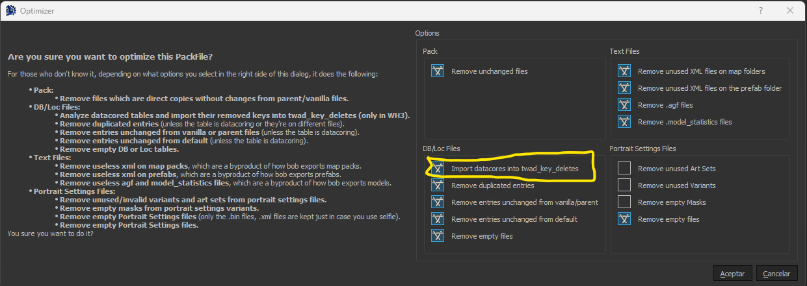
- If you just want to ignore some lines: First, create the table like a normal db (right-click the pack, then
Create/Create DB, select it from the combobox, give it a name and and hit accept). Once the table exist in your pack, YOU DO NOT NEED TO EDIT IT MANUALLY. In fact, due to the way keys are shown in RPFM, specially in multikey tables, if you try to input a key manually in the twad_key_deletes table chances are you write it wrong and you won’t notice it until you start the game. Instead, go to the table you want to remove the lines from, select them, right-click,Add Selection to Key Deletesand click on your new table. This will automatically add the keys of the selected rows to the twad_key_deletes table you created. Magic!
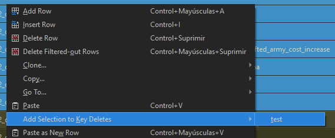
- If you have no other way to do what you want to do, you can edit the
twad_key_deletestable like any other table. This is only recommended for situations not covered by the other two methods (like deleting a row from the table) because it can otherwise lead to incorrect/non-working entries being added into the new table, that RPFM can’t yet detect as errors. And… it’ll take you forever to add 10.000 keys this way.
But it is gold all that glitters?
Now, while this allows modders to finally get rid of datacores, there are some caveats that one has to take into account:
-
The effect ingame is like if we remove a line from the db. This means if you remove a line that’s referenced in another table, chances are your mod’s going to crash the game. Just like if you remove a line from
land_unitsin a datacore and don’t remove all the references to said unit. Though this time is worse, because RPFM’s diagnostics cannot detect this kind of broken reference (yet) and if the game warns you about it in a dialog when it crashes, it may point you to the wrong pack. So if used without the proper though, this can cause more problems than it solves. -
Load order matters: Meaning if a mod removes a line, then a lower priority mod adds it back, the line will be removed, then added back.
Server
The RPFM Server (rpfm_server) is a standalone backend process that exposes a WebSocket-based IPC protocol for programmatic access to RPFM’s functionality. Any language that supports WebSockets and JSON can communicate with the server — no Rust or Qt dependencies required on the client side.
This section documents the protocol, all available commands and responses, and provides client implementation examples.
Connecting
The server listens on ws://127.0.0.1:45127/ws by default. Connect with any WebSocket client:
const ws = new WebSocket("ws://127.0.0.1:45127/ws");
using var ws = new ClientWebSocket();
await ws.ConnectAsync(new Uri("ws://127.0.0.1:45127/ws"), CancellationToken.None);
Upon connection, the server immediately sends a SessionConnected message (with id: 0) containing the session ID assigned to this connection:
{ "id": 0, "data": { "SessionConnected": 42 } }
Sessions
The server supports multiple concurrent sessions. Each session maintains its own state (open packs, game selection, etc.).
Reconnection
To reconnect to an existing session, append ?session_id=<id> to the WebSocket URL:
const ws = new WebSocket("ws://127.0.0.1:45127/ws?session_id=42");
using var ws = new ClientWebSocket();
await ws.ConnectAsync(new Uri("ws://127.0.0.1:45127/ws?session_id=42"), CancellationToken.None);
Session Listing (REST)
A REST endpoint is available for listing active sessions:
GET http://127.0.0.1:45127/sessions
Returns a JSON array of session info objects:
[
{
"session_id": 42,
"connection_count": 1,
"timeout_remaining_secs": null,
"is_shutting_down": false,
"pack_names": ["my_mod.pack"]
}
]
Disconnection
Send the ClientDisconnecting command before closing the WebSocket so the server can clean up resources immediately instead of waiting for a timeout:
{ "id": 99, "data": "ClientDisconnecting" }
Message Format
Every message — both commands (client to server) and responses (server to client) — is wrapped in a Message envelope:
{
"id": <number>,
"data": <Command or Response>
}
| Field | Type | Description |
|---|---|---|
id | number | Unique request ID. The server echoes this in the response so the client can correlate requests and responses. Use 0 only for unsolicited server messages. |
data | object or string | The command or response payload. |
Request-Response Correlation
The id field enables asynchronous communication. Multiple requests can be in flight simultaneously — match each response back to its request by id.
Serialization Convention
All messages use JSON. Rust enums (which back both Command and Response) are serialized by serde as follows:
| Rust Variant | JSON Serialization | Example |
|---|---|---|
| Unit variant | "VariantName" | "NewPack" |
| Newtype variant | { "VariantName": value } | { "ClosePack": "my_mod.pack" } |
| Tuple variant | { "VariantName": [v1, v2, ...] } | { "SavePackAs": ["key", "/path/to/file"] } |
Quick Start
Here is a minimal example that connects to the server, opens a pack file, and prints the response:
const ws = new WebSocket("ws://127.0.0.1:45127/ws");
let nextId = 1;
let currentSessionId: number | null = null;
function send(command: object | string): number {
const id = nextId++;
ws.send(JSON.stringify({ id, data: command }));
return id;
}
// Listen for responses
ws.onmessage = (event) => {
const msg = JSON.parse(event.data);
// Handle the SessionConnected message sent immediately after connection
if (typeof msg.data === "object" && "SessionConnected" in msg.data) {
currentSessionId = msg.data.SessionConnected;
console.log(`Connected to session ${currentSessionId}`);
return;
}
console.log(`Response for request ${msg.id}:`, msg.data);
};
// Open a pack file once connected
ws.onopen = () => {
send({ OpenPackFiles: ["/path/to/my_mod.pack"] });
};
using System.Net.WebSockets;
using System.Text;
using System.Text.Json;
using var ws = new ClientWebSocket();
await ws.ConnectAsync(new Uri("ws://127.0.0.1:45127/ws"), CancellationToken.None);
int nextId = 1;
int? currentSessionId = null;
async Task Send(JsonElement command)
{
var id = nextId++;
var msg = JsonSerializer.Serialize(new { id, data = command });
var bytes = Encoding.UTF8.GetBytes(msg);
await ws.SendAsync(bytes, WebSocketMessageType.Text, true, CancellationToken.None);
}
// Listen for responses
var buffer = new byte[4096];
while (ws.State == WebSocketState.Open)
{
var result = await ws.ReceiveAsync(buffer, CancellationToken.None);
var json = Encoding.UTF8.GetString(buffer, 0, result.Count);
var msg = JsonDocument.Parse(json).RootElement;
// Handle the SessionConnected message sent immediately after connection
if (msg.GetProperty("data").ValueKind == JsonValueKind.Object
&& msg.GetProperty("data").TryGetProperty("SessionConnected", out var sessionId))
{
currentSessionId = sessionId.GetInt32();
Console.WriteLine($"Connected to session {currentSessionId}");
// Open a pack file once connected
var openCmd = JsonSerializer.SerializeToElement(
new { OpenPackFiles = new[] { "/path/to/my_mod.pack" } });
await Send(openCmd);
continue;
}
Console.WriteLine($"Response for request {msg.GetProperty("id")}: {msg.GetProperty("data")}");
}
Shared Types
This page documents all the data types used in the RPFM server protocol. These types appear as parameters in Commands and as payloads in Responses.
All types are serialized as JSON. Nullable fields use null when absent.
Core Types
DataSource
Discriminates where file data originates from. Serialized as a plain string.
| Value | Description |
|---|---|
"PackFile" | An open Pack file |
"GameFiles" | Vanilla game files |
"ParentFiles" | Parent mod files |
"AssKitFiles" | Assembly Kit files |
"ExternalFile" | External file on disk |
ContainerPath
A file or folder path within a Pack. Serialized as a tagged enum:
{ "File": "db/units_tables/data" }
{ "Folder": "db/units_tables" }
RFileInfo
Metadata about a packed file within a container.
| Field | Type | Description |
|---|---|---|
path | string | Internal path within the Pack |
container_name | string or null | Name of the containing Pack (null if unknown) |
timestamp | number or null | Last modification timestamp |
file_type | string | File type enum value (e.g. "DB", "Loc", "Text") |
interface RFileInfo {
path: string;
container_name: string | null;
timestamp: number | null;
file_type: string;
}
public class RFileInfo
{
public string Path { get; set; }
public string? ContainerName { get; set; }
public long? Timestamp { get; set; }
public string FileType { get; set; }
}
ContainerInfo
Reduced representation of a Pack file (container-level metadata).
| Field | Type | Description |
|---|---|---|
file_name | string | Name of the Pack file |
file_path | string | Full path to the Pack file on disk |
pfh_version | string | PFH version enum value |
pfh_file_type | string | PFH file type enum value |
bitmask | unknown | PFH flags bitmask |
compress | string | Compression format enum value |
timestamp | number | Pack file timestamp |
interface ContainerInfo {
file_name: string;
file_path: string;
pfh_version: string;
pfh_file_type: string;
bitmask: unknown;
compress: string;
timestamp: number;
}
public class ContainerInfo
{
public string FileName { get; set; }
public string FilePath { get; set; }
public string PfhVersion { get; set; }
public string PfhFileType { get; set; }
public object Bitmask { get; set; }
public string Compress { get; set; }
public long Timestamp { get; set; }
}
DependenciesInfo
Information about loaded dependency files, used to populate dependency tree views.
| Field | Type | Description |
|---|---|---|
asskit_tables | RFileInfo[] | Assembly Kit table files |
vanilla_packed_files | RFileInfo[] | Vanilla game files |
parent_packed_files | RFileInfo[] | Parent mod files |
interface DependenciesInfo {
asskit_tables: RFileInfo[];
vanilla_packed_files: RFileInfo[];
parent_packed_files: RFileInfo[];
}
public class DependenciesInfo
{
public List<RFileInfo> AsskitTables { get; set; }
public List<RFileInfo> VanillaPackedFiles { get; set; }
public List<RFileInfo> ParentPackedFiles { get; set; }
}
SessionInfo
Information about an active session on the server. Returned by the GET /sessions REST endpoint.
| Field | Type | Description |
|---|---|---|
session_id | number | Unique session identifier |
connection_count | number | Number of active WebSocket connections |
timeout_remaining_secs | number or null | Seconds until timeout (null if connections exist) |
is_shutting_down | boolean | Whether the session is shutting down |
pack_names | string[] | Names of the open packs |
interface SessionInfo {
session_id: number;
connection_count: number;
timeout_remaining_secs: number | null;
is_shutting_down: boolean;
pack_names: string[];
}
public class SessionInfo
{
public int SessionId { get; set; }
public int ConnectionCount { get; set; }
public double? TimeoutRemainingSecs { get; set; }
public bool IsShuttingDown { get; set; }
public List<string> PackNames { get; set; }
}
File Types
NewFile
Parameters for creating a new packed file. Serialized as a tagged enum — the variant name determines the file type:
| Variant | Payload | Description |
|---|---|---|
AnimPack | string | File name |
DB | [string, string, number] | [file_name, table_name, version] |
Loc | string | Table name |
PortraitSettings | [string, number, [string, string][]] | [name, version, clone_entries] |
Text | [string, string] | [file_name, text_format] |
VMD | string | File name |
WSModel | string | File name |
Example:
{ "DB": ["my_table", "units_tables", 4] }
{ "Text": ["script.lua", "Lua"] }
VideoInfo
Metadata specific to video files.
| Field | Type | Description |
|---|---|---|
format | string | Video format enum value |
version | number | Video format version |
codec_four_cc | string | Codec FourCC identifier |
width | number | Video width in pixels |
height | number | Video height in pixels |
num_frames | number | Total number of frames |
framerate | number | Frames per second |
interface VideoInfo {
format: string;
version: number;
codec_four_cc: string;
width: number;
height: number;
num_frames: number;
framerate: number;
}
public class VideoInfo
{
public string Format { get; set; }
public int Version { get; set; }
public string CodecFourCc { get; set; }
public int Width { get; set; }
public int Height { get; set; }
public int NumFrames { get; set; }
public double Framerate { get; set; }
}
FileType
Identifies the type of a packed file. Serialized as a plain string:
| Value | Description |
|---|---|
"Anim" | Animation file |
"AnimFragmentBattle" | Battle animation fragment |
"AnimPack" | Animation pack |
"AnimsTable" | Animation table |
"Atlas" | Sprite sheet atlas |
"Audio" | Audio file |
"BMD" | Battle map data |
"BMDVegetation" | Battle map vegetation data |
"Dat" | Generic data file |
"DB" | Database table |
"ESF" | Empire Save Format |
"Font" | Font file |
"GroupFormations" | Group formations |
"HlslCompiled" | Compiled HLSL shader |
"Image" | Image file (DDS, PNG, etc.) |
"Loc" | Localisation file |
"MatchedCombat" | Matched combat animations |
"Pack" | Nested Pack file |
"PortraitSettings" | Portrait settings |
"RigidModel" | 3D model file |
"SoundBank" | Sound bank |
"Text" | Text file (Lua, XML, JSON, etc.) |
"UIC" | UI Component |
"UnitVariant" | Unit variant |
"Video" | Video file (CA_VP8) |
"VMD" | VMD text file |
"WSModel" | WSModel text file |
"Unknown" | Unrecognized file type |
CompressionFormat
Compression format for Pack files. Serialized as a plain string:
| Value | Description |
|---|---|
"None" | No compression |
"Lz4" | LZ4 compression |
"Zstd" | Zstandard compression |
PFHFileType
Pack file type. Serialized as a plain string (e.g. "Mod", "Movie", "Boot", etc.).
Data Types
DecodedData
Cell data in a table. Serialized as a tagged enum — the variant name indicates the data type:
| Variant | Payload | Description |
|---|---|---|
Boolean | boolean | Boolean value |
F32 | number | 32-bit float |
F64 | number | 64-bit float |
I16 | number | 16-bit integer |
I32 | number | 32-bit integer |
I64 | number | 64-bit integer |
ColourRGB | string | RGB colour string |
StringU8 | string | UTF-8 string |
StringU16 | string | UTF-16 string |
OptionalI16 | number | Optional 16-bit integer |
OptionalI32 | number | Optional 32-bit integer |
OptionalI64 | number | Optional 64-bit integer |
OptionalStringU8 | string | Optional UTF-8 string |
OptionalStringU16 | string | Optional UTF-16 string |
SequenceU16 | DecodedData[][] | Nested sequence (u16 count) |
SequenceU32 | DecodedData[][] | Nested sequence (u32 count) |
Example:
{ "StringU8": "hello" }
{ "I32": 42 }
{ "Boolean": true }
TableInMemory
In-memory table data structure used by DB and Loc files.
| Field | Type | Description |
|---|---|---|
table_name | string | Table type identifier (e.g. "units_tables") |
definition | Definition | Schema definition for this table |
definition_patch | DefinitionPatch | Runtime schema modifications |
table_data | DecodedData[][] | Row data (outer = rows, inner = columns) |
altered | boolean | Whether data was altered during decoding |
RFile
A raw packed file.
| Field | Type | Description |
|---|---|---|
path | string | Path of the file within a container |
timestamp | number or null | Last modified timestamp (Unix epoch) |
file_type | FileType | Detected or specified file type |
container_name | string or null | Name of the source container |
data | unknown | Internal data storage |
RFileDecoded
Decoded file content. Serialized as a tagged enum — the variant name indicates the file type. See Decoded File Types for each type’s structure.
Variants: Anim, AnimFragmentBattle, AnimPack, AnimsTable, Atlas, Audio, BMD, BMDVegetation, Dat, DB, ESF, Font, GroupFormations, HlslCompiled, Image, Loc, MatchedCombat, Pack, PortraitSettings, RigidModel, SoundBank, Text, UIC, UnitVariant, Unknown, Video, VMD, WSModel.
Example:
{ "DB": { "mysterious_byte": true, "guid": "", "table": { ... } } }
{ "Text": { "encoding": "Utf8Bom", "format": "Lua", "contents": "-- script" } }
TableReferences
Reference data for a column, used by lookup/autocomplete features.
| Field | Type | Description |
|---|---|---|
field_name | string | Name of the column these references are for |
referenced_table_is_ak_only | boolean | Whether the referenced table only exists in the AK |
referenced_column_is_localised | boolean | Whether the referenced column is localised |
data | Record<string, string> | Map of actual values to their display text |
Decoded File Types
DB
Decoded database table file.
| Field | Type | Description |
|---|---|---|
mysterious_byte | boolean | Boolean flag (setting to 0 can crash WH2) |
guid | string | GUID for this table instance (empty for older games) |
table | TableInMemory | The table data including definition and rows |
Loc
Decoded localisation file.
| Field | Type | Description |
|---|---|---|
table | TableInMemory | Table data with key, text, and tooltip columns |
Text
Decoded text file.
| Field | Type | Description |
|---|---|---|
encoding | TextEncoding | Character encoding of the file |
format | TextFormat | Detected file format |
contents | string | Decoded text contents |
TextEncoding values: "Iso8859_1", "Utf8", "Utf8Bom", "Utf16Le"
TextFormat values: "Bat", "Cpp", "Html", "Hlsl", "Json", "Js", "Css", "Lua", "Markdown", "Plain", "Python", "Sql", "Xml", "Yaml"
Image
Decoded image file.
| Field | Type | Description |
|---|---|---|
data | number[] | Original raw image data in native format |
converted_data | number[] or null | PNG-converted data for DDS textures (for viewing) |
RigidModel
Decoded RigidModel (3D model) file.
| Field | Type | Description |
|---|---|---|
version | number | File format version (6, 7, or 8) |
uk_1 | number | Unknown field |
skeleton_id | string | Skeleton identifier for animation (empty if static) |
lods | unknown[] | LOD structures from highest to lowest quality |
ESF
Decoded ESF (Empire Save Format) file.
| Field | Type | Description |
|---|---|---|
signature | string | Format signature (CAAB, CBAB, etc.) |
unknown_1 | number | Unknown header field, typically 0 |
creation_date | number | Creation timestamp |
root_node | unknown | Root node of the data tree |
Bmd
Decoded BMD (Battle Map Data) file.
| Field | Type | Description |
|---|---|---|
serialise_version | number | File format version (23-27) |
| (other fields) | unknown | Complex battlefield-related data |
AnimFragmentBattle
Decoded AnimFragmentBattle file.
| Field | Type | Description |
|---|---|---|
version | number | File format version (2 or 4) |
entries | unknown[] | List of animation entries |
skeleton_name | string | Name of the skeleton |
subversion | number | Format subversion (version 4 only) |
AnimsTable
Decoded AnimsTable file.
| Field | Type | Description |
|---|---|---|
version | number | File format version (currently 2) |
entries | unknown[] | List of animation table entries |
Atlas
Decoded Atlas (sprite sheet) file.
| Field | Type | Description |
|---|---|---|
version | number | File format version (currently 1) |
unknown | number | Unknown field |
entries | unknown[] | List of sprite entries |
Audio
Decoded Audio file.
| Field | Type | Description |
|---|---|---|
data | number[] | Raw binary audio data |
GroupFormations
Decoded GroupFormations file.
| Field | Type | Description |
|---|---|---|
formations | unknown[] | List of formation definitions |
MatchedCombat
Decoded MatchedCombat file.
| Field | Type | Description |
|---|---|---|
version | number | File format version (1 or 3) |
entries | unknown[] | List of matched combat entries |
PortraitSettings
Decoded PortraitSettings file.
| Field | Type | Description |
|---|---|---|
version | number | Format version (1 or 4) |
entries | unknown[] | Portrait entries, one per art set |
UIC
Decoded UIC (UI Component) file.
| Field | Type | Description |
|---|---|---|
version | number | Format version number |
source_is_xml | boolean | Whether decoded from XML (true) or binary (false) |
comment | string | Optional comment/description |
precache_condition | string | Condition for precaching |
hierarchy | Record<string, unknown> | Tree structure of UI element relationships |
components | Record<string, unknown> | Map of component IDs to definitions |
UnitVariant
Decoded UnitVariant file.
| Field | Type | Description |
|---|---|---|
version | number | Version of the UnitVariant |
unknown_1 | number | Unknown field |
categories | unknown[] | Variant categories |
Schema Types
FieldType
The data type of a field in a schema definition. Most values are plain strings; sequence types wrap a nested Definition:
| Value | Description |
|---|---|
"Boolean" | Boolean value |
"F32" | 32-bit float |
"F64" | 64-bit float |
"I16" | 16-bit signed integer |
"I32" | 32-bit signed integer |
"I64" | 64-bit signed integer |
"ColourRGB" | RGB colour value |
"StringU8" | UTF-8 string (length-prefixed u8) |
"StringU16" | UTF-16 string (length-prefixed u16) |
"OptionalI16" | Optional 16-bit integer |
"OptionalI32" | Optional 32-bit integer |
"OptionalI64" | Optional 64-bit integer |
"OptionalStringU8" | Optional UTF-8 string |
"OptionalStringU16" | Optional UTF-16 string |
{ "SequenceU16": Definition } | Nested sequence (u16 count) |
{ "SequenceU32": Definition } | Nested sequence (u32 count) |
Field
A single field descriptor within a Definition.
| Field | Type | Description |
|---|---|---|
name | string | Field name |
field_type | FieldType | Data type |
is_key | boolean | Part of the table’s primary key |
default_value | string or null | Default value for new rows |
is_filename | boolean | Whether this field contains a filename/path |
filename_relative_path | string or null | Semicolon-separated relative paths for file lookup |
is_reference | [string, string] or null | Foreign key: [table_name, column_name] |
lookup | string[] or null | Additional columns to show from the referenced table |
description | string | Human-readable description |
ca_order | number | Position in CA’s Assembly Kit editor (-1 = unknown) |
is_bitwise | number | Number of boolean columns to split this field into |
enum_values | Record<number, string> | Named enum values (integer key to string name) |
is_part_of_colour | number or null | RGB colour group index (null if not a colour field) |
Definition
Schema definition for a specific version of a DB table.
| Field | Type | Description |
|---|---|---|
version | number | Version number (-1 = fake, 0 = unversioned, 1+ = versioned) |
fields | Field[] | Fields in binary encoding order (see note below) |
localised_fields | Field[] | Fields extracted to LOC files during export |
localised_key_order | number[] | Order of key fields for constructing localisation keys |
Note: The
fieldslist is ordered to match the binary encoding of the table, which is not necessarily the order columns appear in the decoded/displayed data. To get fields in decoded column order (with bitwise expansion, enum conversion, and colour merging applied), use theFieldsProcessedcommand, passing theDefinitionas input.
Schema
The full schema containing all table definitions for a game.
| Field | Type | Description |
|---|---|---|
version | number | Schema format version (currently 5) |
definitions | Record<string, Definition[]> | Table name to version definitions |
patches | Record<string, DefinitionPatch> | Table name to patches |
DefinitionPatch
A patch applied to a schema definition. Serialized as a nested map:
{
"field_name": {
"property_name": "property_value"
}
}
Type: Record<string, Record<string, string>>
Pack Settings Types
PackSettings
Per-pack configuration stored inside the Pack file.
| Field | Type | Description |
|---|---|---|
settings_text | Record<string, string> | Multi-line text settings (e.g., ignore lists) |
settings_string | Record<string, string> | Single-line string settings |
settings_bool | Record<string, boolean> | Boolean flags |
settings_number | Record<string, number> | Integer settings |
Note
A note attached to a path within the Pack file.
| Field | Type | Description |
|---|---|---|
id | number | Unique note identifier |
message | string | Note content/body |
url | string or null | Optional URL associated with the note |
path | string | Path within the Pack (empty string = global) |
OptimizerOptions
Configuration for the pack optimizer.
| Field | Type | Description |
|---|---|---|
pack_remove_itm_files | boolean | Remove files unchanged from vanilla |
db_import_datacores_into_twad_key_deletes | boolean | Import datacored tables into twad_key_deletes |
db_optimize_datacored_tables | boolean | Optimize datacored tables (not recommended) |
table_remove_duplicated_entries | boolean | Remove duplicated rows from DB and Loc files |
table_remove_itm_entries | boolean | Remove Identical To Master rows |
table_remove_itnr_entries | boolean | Remove Identical To New Row rows |
table_remove_empty_file | boolean | Remove empty DB and Loc files |
text_remove_unused_xml_map_folders | boolean | Remove unused XML files in map folders |
text_remove_unused_xml_prefab_folder | boolean | Remove unused XML files in the prefab folder |
text_remove_agf_files | boolean | Remove unused AGF files |
text_remove_model_statistics_files | boolean | Remove unused model_statistics files |
pts_remove_unused_art_sets | boolean | Remove unused art sets in Portrait Settings |
pts_remove_unused_variants | boolean | Remove unused variants from Portrait Settings art sets |
pts_remove_empty_masks | boolean | Remove empty masks in Portrait Settings |
pts_remove_empty_file | boolean | Remove empty Portrait Settings files |
Translation Types
Translation
A single translation entry for a Loc key.
| Field | Type | Description |
|---|---|---|
key | string | The Loc key identifying this string |
value_original | string | Original text in the base language |
value_translated | string | Translated text in the target language |
needs_retranslation | boolean | Whether the source text has changed since translation |
removed | boolean | Whether this string has been removed from the source pack |
PackTranslation
Translation data for a pack in a specific language.
| Field | Type | Description |
|---|---|---|
language | string | Target language code (e.g. "es", "de") |
pack_name | string | Name of the pack |
translations | Record<string, Translation> | Loc key to translation data |
Diagnostics Types
Diagnostics
Diagnostics report configuration and results.
| Field | Type | Description |
|---|---|---|
folders_ignored | string[] | Folder paths excluded from checks |
files_ignored | string[] | File paths excluded from checks |
fields_ignored | string[] | Table fields excluded ("table_name/field_name") |
diagnostics_ignored | string[] | Diagnostic type identifiers to skip |
results | unknown[] | Diagnostic results from the most recent check |
Update Types
APIResponse
Response from a program update check. Serialized as a tagged enum:
| Variant | Payload | Description |
|---|---|---|
NewBetaUpdate | string | New beta version available |
NewStableUpdate | string | New stable version available |
NewUpdateHotfix | string | New hotfix available |
NoUpdate | (none) | Already up to date |
UnknownVersion | (none) | Current version could not be determined |
GitResponse
Response from a git-based update check (schemas, translations, etc.):
| Value | Description |
|---|---|
"NewUpdate" | A new update is available on the remote |
"NoUpdate" | The local repository is up to date |
"NoLocalFiles" | No local copy exists (needs cloning) |
"Diverged" | Local and remote branches have diverged |
Search Types
SearchSource
Which data source to search. Serialized as a plain string:
| Value | Description |
|---|---|
"Pack" | Currently loaded pack |
"ParentFiles" | Parent mod dependencies |
"GameFiles" | Vanilla game files |
"AssKitFiles" | Assembly Kit files |
SearchOn
Boolean flags for which file types to include in a search. Each field corresponds to a file type:
anim, anim_fragment_battle, anim_pack, anims_table, atlas, audio, bmd, db, esf, group_formations, image, loc, matched_combat, pack, portrait_settings, rigid_model, sound_bank, text, uic, unit_variant, unknown, video, schema
All fields are boolean.
GlobalSearch
Global search configuration and results.
| Field | Type | Description |
|---|---|---|
pattern | string | Text pattern or regex to search for |
replace_text | string | Replacement text |
case_sensitive | boolean | Whether the search is case-sensitive |
use_regex | boolean | Whether the pattern is a regular expression |
source | SearchSource | Which data source to search |
search_on | SearchOn | Which file types to search |
matches | Matches | Results from the most recent search |
game_key | string | Game key for the files being searched |
Match Types
Search results use specialized match types per file format. All match containers share the same pattern: a path string and a matches array.
TableMatch (used for DB and Loc files):
| Field | Type | Description |
|---|---|---|
column_name | string | Column where the match is |
column_number | number | Logical column index (-1 if hidden) |
row_number | number | Row number (-1 if hidden by filter) |
start | number | Byte offset where match starts |
end | number | Byte offset where match ends |
text | string | Contents of the matched cell |
TextMatch (used for text files):
| Field | Type | Description |
|---|---|---|
row | number | Row of the first character |
start | number | Byte offset where match starts |
end | number | Byte offset where match ends |
text | string | Line containing the match |
UnknownMatch (used for binary/unknown files):
| Field | Type | Description |
|---|---|---|
pos | number | Byte position of the match |
len | number | Length of the matched pattern in bytes |
AnimFragmentBattleMatch (used for AnimFragmentBattle files):
| Field | Type | Description |
|---|---|---|
skeleton_name | boolean | Match is in the skeleton name |
table_name | boolean | Match is in the table name |
mount_table_name | boolean | Match is in the mount table name |
unmount_table_name | boolean | Match is in the unmount table name |
locomotion_graph | boolean | Match is in the locomotion graph |
entry | [number, [number, boolean, boolean, boolean] or null, boolean, boolean, boolean, boolean, boolean] or null | Entry match details |
start | number | Byte offset where match starts |
end | number | Byte offset where match ends |
text | string | The matched text |
AtlasMatch (used for Atlas files — same structure as TableMatch):
| Field | Type | Description |
|---|---|---|
column_name | string | Column where the match is |
column_number | number | Logical column index |
row_number | number | Row number of the match |
start | number | Byte offset where match starts |
end | number | Byte offset where match ends |
text | string | Contents of the matched cell |
PortraitSettingsMatch (used for PortraitSettings files):
| Field | Type | Description |
|---|---|---|
entry | number | Index of the entry |
id | boolean | Match is in the id field |
camera_settings_head | boolean | Match is in head camera skeleton node |
camera_settings_body | boolean | Match is in body camera skeleton node |
variant | [number, boolean, boolean, boolean, boolean, boolean] or null | Variant match details |
start | number | Byte offset where match starts |
end | number | Byte offset where match ends |
text | string | The matched text |
RigidModelMatch (used for RigidModel files):
| Field | Type | Description |
|---|---|---|
skeleton_id | boolean | Match is in the skeleton id |
mesh_value | [number, number] or null | LOD and mesh index, or null |
mesh_name | boolean | Match is in the mesh name |
mesh_mat_name | boolean | Match is in the material name |
mesh_textute_directory | boolean | Match is in the texture directory |
mesh_filters | boolean | Match is in the mesh filters |
mesh_att_point_name | number or null | Attachment point index with match |
mesh_texture_path | number or null | Texture path index with match |
start | number | Byte offset where match starts |
end | number | Byte offset where match ends |
text | string | The matched text |
UnitVariantMatch (used for UnitVariant files):
| Field | Type | Description |
|---|---|---|
entry | number | Index of the entry |
name | boolean | Match is in the name |
variant | [number, boolean, boolean] or null | Variant match details |
start | number | Byte offset where match starts |
end | number | Byte offset where match ends |
text | string | The matched text |
SchemaMatch (used for schema searches):
| Field | Type | Description |
|---|---|---|
table_name | string | The table name |
version | number | Version of the matched definition |
column | number | Column index of the match |
column_name | string | Full name of the matched column |
All match container types (e.g. TableMatches, TextMatches, AnimFragmentBattleMatches, etc.) share the same structure: { path: string, matches: <MatchType>[] }.
MatchHolder
A tagged enum wrapping a single file type’s matches. The variant name indicates the file type:
{ "Db": { "path": "db/units_tables/data", "matches": [...] } }
{ "Text": { "path": "script/campaign/mod.lua", "matches": [...] } }
Variants: Anim, AnimFragmentBattle, AnimPack, AnimsTable, Atlas, Audio, Bmd, Db, Esf, GroupFormations, Image, Loc, MatchedCombat, Pack, PortraitSettings, RigidModel, SoundBank, Text, Uic, UnitVariant, Unknown, Video, Schema.
Commands
This page documents all commands that can be sent to the RPFM server. Each command is wrapped in a Message with a unique id.
Commands with no parameters are serialized as plain strings. Commands with parameters use the { "CommandName": params } format. See the serialization convention for details.
Most commands that operate on a specific pack take a pack_key string as their first parameter. The pack key is returned by OpenPackFiles or NewPack when you open or create a pack.
Lifecycle
Exit
Close the background thread. Do not use directly — the server manages this internally.
Response: None (breaks the server loop).
ClientDisconnecting
Signal that the client is intentionally disconnecting. Allows the server to clean up the session immediately.
Response: "Success"
{ "id": 1, "data": "ClientDisconnecting" }
PackFile Operations
NewPack
Create a new empty Pack.
Response: { String: string } — the assigned pack key.
{ "id": 1, "data": "NewPack" }
OpenPackFiles
Open one or more Pack files and merge them into the current session.
| Parameter | Type | Description |
|---|---|---|
paths | string[] | Filesystem paths to open |
Response: { StringContainerInfo: [string, ContainerInfo] } — pack key and metadata.
{ "id": 1, "data": { "OpenPackFiles": ["/path/to/my_mod.pack"] } }
LoadAllCAPackFiles
Open all CA Pack files for the selected game as one merged Pack.
Response: { StringContainerInfo: [string, ContainerInfo] }
{ "id": 1, "data": "LoadAllCAPackFiles" }
ListOpenPacks
List all currently open packs with their keys and metadata.
Response: { VecStringContainerInfo: [string, ContainerInfo][] }
{ "id": 1, "data": "ListOpenPacks" }
ClosePack
Close a specific open Pack.
| Parameter | Type | Description |
|---|---|---|
pack_key | string | Pack to close |
Response: "Success"
{ "id": 1, "data": { "ClosePack": "my_mod.pack" } }
CloseAllPacks
Close all currently open Packs.
Response: "Success"
{ "id": 1, "data": "CloseAllPacks" }
SavePack
Save a specific open Pack to disk.
| Parameter | Type | Description |
|---|---|---|
pack_key | string | Pack to save |
Response: { ContainerInfo: ContainerInfo }
{ "id": 1, "data": { "SavePack": "my_mod.pack" } }
SavePackAs
Save a specific open Pack to a new path.
| Parameter | Type | Description |
|---|---|---|
pack_key | string | Pack to save |
path | string | Destination path |
Response: { ContainerInfo: ContainerInfo }
{ "id": 1, "data": { "SavePackAs": ["my_mod.pack", "/path/to/new_mod.pack"] } }
CleanAndSavePackAs
Clean a Pack from corrupted/undecoded files and save to disk. Only use if the Pack is otherwise unsaveable.
| Parameter | Type | Description |
|---|---|---|
pack_key | string | Pack to clean |
path | string | Destination path |
Response: { ContainerInfo: ContainerInfo }
{ "id": 1, "data": { "CleanAndSavePackAs": ["my_mod.pack", "/path/to/cleaned.pack"] } }
GetPackFileDataForTreeView
Get tree view data (container info and file list) for a specific pack.
| Parameter | Type | Description |
|---|---|---|
pack_key | string | Pack to query |
Response: { ContainerInfoVecRFileInfo: [ContainerInfo, RFileInfo[]] }
{ "id": 1, "data": { "GetPackFileDataForTreeView": "my_mod.pack" } }
GetPackedFilesInfo
Get metadata for one or more packed files by path.
| Parameter | Type | Description |
|---|---|---|
pack_key | string | Pack to query |
paths | string[] | Internal file paths |
Response: { VecRFileInfo: RFileInfo[] }
{ "id": 1, "data": { "GetPackedFilesInfo": ["my_mod.pack", ["db/units_tables/data"]] } }
GetRFileInfo
Get the info of a single packed file.
| Parameter | Type | Description |
|---|---|---|
pack_key | string | Pack to query |
path | string | Internal file path |
Response: { OptionRFileInfo: RFileInfo | null }
{ "id": 1, "data": { "GetRFileInfo": ["my_mod.pack", "db/units_tables/data"] } }
GetPackFilePath
Get the filesystem path of a specific open Pack.
| Parameter | Type | Description |
|---|---|---|
pack_key | string | Pack to query |
Response: { PathBuf: string }
GetPackFileName
Get the file name of a specific open Pack.
| Parameter | Type | Description |
|---|---|---|
pack_key | string | Pack to query |
Response: { String: string }
SetPackFileType
Change the PFH type of a specific open Pack (e.g., Mod, Movie, Boot).
| Parameter | Type | Description |
|---|---|---|
pack_key | string | Pack to modify |
type | PFHFileType | New file type |
Response: "Success"
ChangeIndexIncludesTimestamp
Toggle the “Index Includes Timestamp” flag for a specific pack.
| Parameter | Type | Description |
|---|---|---|
pack_key | string | Pack to modify |
enabled | boolean | New flag value |
Response: "Success"
ChangeCompressionFormat
Change the compression format of a specific open Pack.
| Parameter | Type | Description |
|---|---|---|
pack_key | string | Pack to modify |
format | CompressionFormat | New format |
Response: { CompressionFormat: CompressionFormat } — actual format set (may differ if unsupported).
OptimizePackFile
Run the optimizer over a specific open Pack.
| Parameter | Type | Description |
|---|---|---|
pack_key | string | Pack to optimize |
options | OptimizerOptions | Optimization config |
Response: { HashSetStringHashSetString: [string[], string[]] } — deleted and added paths.
PatchSiegeAI
Patch Siege AI for Warhammer siege maps in a specific pack.
| Parameter | Type | Description |
|---|---|---|
pack_key | string | Pack to patch |
Response: { StringVecContainerPath: [string, ContainerPath[]] }
Game Selection
GetGameSelected
Get the currently selected game key.
Response: { String: string }
{ "id": 1, "data": "GetGameSelected" }
SetGameSelected
Change the selected game. Optionally rebuilds dependencies.
| Parameter | Type | Description |
|---|---|---|
game_key | string | Game identifier (e.g., "warhammer_3") |
rebuild | boolean | Whether to rebuild dependencies |
Response: { CompressionFormatDependenciesInfo: [CompressionFormat, DependenciesInfo | null] }
{ "id": 1, "data": { "SetGameSelected": ["warhammer_3", true] } }
GenerateDependenciesCache
Generate the dependencies cache for the currently selected game.
Response: { DependenciesInfo: DependenciesInfo }
UpdateCurrentSchemaFromAssKit
Update the current schema with data from the game’s Assembly Kit.
Response: "Success"
PackedFile Operations
NewPackedFile
Create a new packed file inside a specific open Pack.
| Parameter | Type | Description |
|---|---|---|
pack_key | string | Target pack |
path | string | Internal path for the file |
spec | NewFile | File type specification |
Response: "Success"
{ "id": 1, "data": { "NewPackedFile": ["my_mod.pack", "db/units_tables/data", { "DB": ["data", "units_tables", 4] }] } }
AddPackedFiles
Add files from the filesystem to a specific open Pack.
| Parameter | Type | Description |
|---|---|---|
pack_key | string | Target pack |
source_paths | string[] | Filesystem paths to add |
dest_paths | ContainerPath[] | Destination paths inside the pack |
ignore_paths | string[] or null | Paths to exclude (optional) |
Response: { VecContainerPathOptionString: [ContainerPath[], string | null] } — added paths and optional error.
DecodePackedFile
Decode a packed file for display.
| Parameter | Type | Description |
|---|---|---|
pack_key | string | Pack containing the file |
path | string | Internal path |
source | DataSource | Data source to decode from |
Response: Type-specific (e.g., { DBRFileInfo: [DB, RFileInfo] }, { TextRFileInfo: [Text, RFileInfo] }, "Unknown", etc.)
{ "id": 1, "data": { "DecodePackedFile": ["my_mod.pack", "db/units_tables/data", "PackFile"] } }
SavePackedFileFromView
Save an edited packed file back to the Pack.
| Parameter | Type | Description |
|---|---|---|
pack_key | string | Target pack |
path | string | Internal path |
data | RFileDecoded | Decoded file content |
Response: "Success"
DeletePackedFiles
Delete packed files from a specific open Pack.
| Parameter | Type | Description |
|---|---|---|
pack_key | string | Pack to modify |
paths | ContainerPath[] | Paths to delete |
Response: { VecContainerPath: ContainerPath[] } — deleted paths.
{ "id": 1, "data": { "DeletePackedFiles": ["my_mod.pack", [{ "File": "db/units_tables/data" }]] } }
ExtractPackedFiles
Extract packed files to the filesystem.
| Parameter | Type | Description |
|---|---|---|
pack_key | string | Pack to extract from |
paths_by_source | Record<DataSource, ContainerPath[]> | Files grouped by data source |
dest_path | string | Filesystem destination |
as_tsv | boolean | Export tables as TSV |
Response: { StringVecPathBuf: [string, string[]] }
{ "id": 1, "data": { "ExtractPackedFiles": ["my_mod.pack", { "PackFile": [{ "File": "db/units_tables/data" }] }, "/tmp/extract", false] } }
RenamePackedFiles
Rename packed files in a specific Pack.
| Parameter | Type | Description |
|---|---|---|
pack_key | string | Pack to modify |
renames | [ContainerPath, ContainerPath][] | Array of [old_path, new_path] pairs |
Response: { VecContainerPathContainerPath: [ContainerPath, ContainerPath][] }
FolderExists
Check if a folder exists in a specific open Pack.
| Parameter | Type | Description |
|---|---|---|
pack_key | string | Pack to check |
path | string | Folder path |
Response: { Bool: boolean }
PackedFileExists
Check if a packed file exists in a specific open Pack.
| Parameter | Type | Description |
|---|---|---|
pack_key | string | Pack to check |
path | string | File path |
Response: { Bool: boolean }
GetPackedFileRawData
Get the raw binary data of a packed file.
| Parameter | Type | Description |
|---|---|---|
pack_key | string | Pack to query |
path | string | Internal file path |
Response: { VecU8: number[] }
AddPackedFilesFromPackFile
Copy packed files from one Pack into another.
| Parameter | Type | Description |
|---|---|---|
target_key | string | Destination pack key |
source_key | string | Source pack key |
paths | ContainerPath[] | Paths to copy |
Response: { VecContainerPath: ContainerPath[] }
AddPackedFilesFromPackFileToAnimpack
Copy packed files from the main Pack into an AnimPack.
| Parameter | Type | Description |
|---|---|---|
pack_key | string | Pack containing animpack |
animpack_path | string | Path to the AnimPack |
paths | ContainerPath[] | Paths to copy |
Response: { VecContainerPath: ContainerPath[] }
AddPackedFilesFromAnimpack
Copy packed files from an AnimPack into the main Pack.
| Parameter | Type | Description |
|---|---|---|
pack_key | string | Target pack |
source | DataSource | Data source |
animpack_path | string | Path to the AnimPack |
paths | ContainerPath[] | Paths to copy |
Response: { VecContainerPath: ContainerPath[] }
DeleteFromAnimpack
Delete packed files from an AnimPack.
| Parameter | Type | Description |
|---|---|---|
pack_key | string | Pack containing animpack |
animpack_path | string | Path to the AnimPack |
paths | ContainerPath[] | Paths to delete |
Response: "Success"
ImportDependenciesToOpenPackFile
Import files from dependencies into a specific open Pack.
| Parameter | Type | Description |
|---|---|---|
pack_key | string | Target pack |
sources | Record<DataSource, ContainerPath[]> | Files to import by source |
Response: { VecContainerPathVecString: [ContainerPath[], string[]] } — added paths, failed paths.
SavePackedFilesToPackFileAndClean
Save packed files to a specific Pack and optionally run optimizer.
| Parameter | Type | Description |
|---|---|---|
pack_key | string | Target pack |
files | RFile[] | Files to save |
optimize | boolean | Run optimizer |
Response: { VecContainerPathVecContainerPath: [ContainerPath[], ContainerPath[]] } — added and deleted paths.
GetPackedFilesNamesStartingWitPathFromAllSources
Get all file names under a path from all dependency sources.
| Parameter | Type | Description |
|---|---|---|
path | ContainerPath | Path prefix |
Response: { HashMapDataSourceHashSetContainerPath: Record<DataSource, ContainerPath[]> }
Dependency Commands
RebuildDependencies
Rebuild the dependencies by combining deps from all open packs.
| Parameter | Type | Description |
|---|---|---|
rebuild_all | boolean | true = all dependencies, false = mod-specific |
Response: { DependenciesInfo: DependenciesInfo }
{ "id": 1, "data": { "RebuildDependencies": true } }
IsThereADependencyDatabase
Check if a dependency database is loaded.
| Parameter | Type | Description |
|---|---|---|
require_asskit | boolean | Check that AssKit data is included |
Response: { Bool: boolean }
GetTableListFromDependencyPackFile
Get all DB table names from dependency Pack files.
Response: { VecString: string[] }
GetCustomTableList
Get custom table names (start_pos_, twad_ prefixes) from the schema.
Response: { VecString: string[] }
LocalArtSetIds
Get local art set IDs from campaign_character_arts_tables in a specific pack.
| Parameter | Type | Description |
|---|---|---|
pack_key | string | Pack to query |
Response: { HashSetString: string[] }
DependenciesArtSetIds
Get art set IDs from dependencies’ campaign_character_arts_tables.
Response: { HashSetString: string[] }
GetTableVersionFromDependencyPackFile
Get the version of a table from the dependency database.
| Parameter | Type | Description |
|---|---|---|
table_name | string | Table to query |
Response: { I32: number }
GetTableDefinitionFromDependencyPackFile
Get the definition of a table from the dependency database.
| Parameter | Type | Description |
|---|---|---|
table_name | string | Table to query |
Response: { Definition: Definition }
MergeFiles
Merge multiple compatible tables into one.
| Parameter | Type | Description |
|---|---|---|
pack_key | string | Pack containing the files |
paths | ContainerPath[] | Files to merge |
merged_path | string | Destination path for result |
delete_sources | boolean | Delete source files after |
Response: { String: string } — merged path.
UpdateTable
Update a table to a newer schema version.
| Parameter | Type | Description |
|---|---|---|
pack_key | string | Pack containing table |
path | ContainerPath | Table path |
Response: { I32I32VecStringVecString: [old_ver, new_ver, deleted_fields, added_fields] }
GetDependencyPackFilesList
Get the list of Pack files marked as dependencies of a specific Pack.
| Parameter | Type | Description |
|---|---|---|
pack_key | string | Pack to query |
Response: { VecBoolString: [boolean, string][] } — [enabled, pack_name] pairs.
SetDependencyPackFilesList
Set the list of Pack files marked as dependencies.
| Parameter | Type | Description |
|---|---|---|
pack_key | string | Pack to modify |
deps | [boolean, string][] | [enabled, pack_name] pairs |
Response: "Success"
GetRFilesFromAllSources
Get packed files from all known sources.
| Parameter | Type | Description |
|---|---|---|
paths | ContainerPath[] | Paths to retrieve |
lowercase | boolean | Normalize paths to lowercase |
Response: { HashMapDataSourceHashMapStringRFile: Record<DataSource, Record<string, RFile>> }
Search Commands
GlobalSearch
Perform a global search across a specific pack.
| Parameter | Type | Description |
|---|---|---|
pack_key | string | Pack to search |
config | GlobalSearch | Search configuration |
Response: { GlobalSearchVecRFileInfo: [GlobalSearch, RFileInfo[]] }
{
"id": 1,
"data": {
"GlobalSearch": ["my_mod.pack", {
"pattern": "cavalry",
"replace_text": "",
"case_sensitive": false,
"use_regex": false,
"source": "Pack",
"search_on": { "db": true, "loc": true, "text": true },
"matches": {},
"game_key": "warhammer_3"
}]
}
}
GlobalSearchReplaceMatches
Replace specific matches in a global search.
| Parameter | Type | Description |
|---|---|---|
pack_key | string | Pack to modify |
config | GlobalSearch | Search config |
matches | MatchHolder[] | Matches to replace |
Response: { GlobalSearchVecRFileInfo: [GlobalSearch, RFileInfo[]] }
GlobalSearchReplaceAll
Replace all matches in a global search.
| Parameter | Type | Description |
|---|---|---|
pack_key | string | Pack to modify |
config | GlobalSearch | Search config |
Response: { GlobalSearchVecRFileInfo: [GlobalSearch, RFileInfo[]] }
GetReferenceDataFromDefinition
Get reference data for columns in a table definition.
| Parameter | Type | Description |
|---|---|---|
pack_key | string | Pack to query |
table_name | string | Name of the table |
definition | Definition | Table definition |
force_local | boolean | Force regeneration from local |
Response: { HashMapI32TableReferences: Record<number, TableReferences> }
SearchReferences
Find all references to a value across tables in a specific pack.
| Parameter | Type | Description |
|---|---|---|
pack_key | string | Pack to search |
table_columns | Record<string, string[]> | Map of table name to column names |
search_value | string | Value to search for |
Response: { VecDataSourceStringStringUsizeUsize: [DataSource, string, string, number, number][] }
Navigation Commands
GoToDefinition
Go to the definition of a table reference.
| Parameter | Type | Description |
|---|---|---|
pack_key | string | Pack to search |
table_name | string | Table name |
column_name | string | Column name |
values | string[] | Values to search for |
Response: { DataSourceStringUsizeUsize: [DataSource, string, number, number] }
GoToLoc
Navigate to a loc key’s location.
| Parameter | Type | Description |
|---|---|---|
pack_key | string | Pack to search |
loc_key | string | Loc key to find |
Response: { DataSourceStringUsizeUsize: [DataSource, string, number, number] }
GetSourceDataFromLocKey
Get the source data (table, column, values) of a loc key.
| Parameter | Type | Description |
|---|---|---|
pack_key | string | Pack to search |
loc_key | string | Loc key to look up |
Response: { OptionStringStringVecString: [string, string, string[]] | null }
Cascade Edition
CascadeEdition
Trigger a cascade edition on all referenced data in a specific pack.
| Parameter | Type | Description |
|---|---|---|
pack_key | string | Pack to modify |
table | string | Table name |
definition | Definition | Table definition |
changes | [Field, string, string][] | [field, old_value, new_value] tuples |
Response: { VecContainerPathVecRFileInfo: [ContainerPath[], RFileInfo[]] }
Video Commands
SetVideoFormat
Change the format of a ca_vp8 video packed file.
| Parameter | Type | Description |
|---|---|---|
pack_key | string | Pack containing file |
path | string | Internal file path |
format | SupportedFormats | Target video format |
Response: "Success"
Schema Commands
SaveSchema
Save a schema to disk.
| Parameter | Type | Description |
|---|---|---|
schema | Schema | Complete schema to save |
Response: "Success"
CleanCache
Encode and clean the internal cache for specified paths.
| Parameter | Type | Description |
|---|---|---|
pack_key | string | Pack to clean |
paths | ContainerPath[] | Paths to process |
Response: "Success"
IsSchemaLoaded
Check if a schema is loaded in memory.
Response: { Bool: boolean }
Schema
Get the currently loaded schema.
Response: { Schema: Schema }
DefinitionsByTableName
Get all definitions (all versions) for a table name.
| Parameter | Type | Description |
|---|---|---|
table_name | string | Table to query |
Response: { VecDefinition: Definition[] }
DefinitionByTableNameAndVersion
Get a specific definition by table name and version.
| Parameter | Type | Description |
|---|---|---|
table_name | string | Table name |
version | number | Version number |
Response: { Definition: Definition }
DeleteDefinition
Delete a definition by table name and version.
| Parameter | Type | Description |
|---|---|---|
table_name | string | Table name |
version | number | Version number |
Response: "Success"
ReferencingColumnsForDefinition
Get columns from other tables that reference a given table/definition.
| Parameter | Type | Description |
|---|---|---|
table_name | string | Referenced table |
definition | Definition | Table definition |
Response: { HashMapStringHashMapStringVecString: Record<string, Record<string, string[]>> }
FieldsProcessed
Get the processed fields from a definition (bitwise expansion, enum conversion, colour merging applied).
| Parameter | Type | Description |
|---|---|---|
definition | Definition | Definition to process |
Response: { VecField: Field[] }
TSV Commands
ExportTSV
Export a table as a TSV file.
| Parameter | Type | Description |
|---|---|---|
pack_key | string | Pack containing table |
path | string | Internal table path |
dest | string | Filesystem output path |
source | DataSource | Data source |
Response: "Success"
ImportTSV
Import a TSV file as a table.
| Parameter | Type | Description |
|---|---|---|
pack_key | string | Target pack |
path | string | Internal destination path |
tsv_path | string | Filesystem TSV path |
Response: { RFileDecoded: RFileDecoded }
External Program Commands
OpenContainingFolder
Open the folder containing a specific open Pack in the file manager.
| Parameter | Type | Description |
|---|---|---|
pack_key | string | Pack whose folder to open |
Response: "Success"
OpenPackedFileInExternalProgram
Open a packed file in an external program.
| Parameter | Type | Description |
|---|---|---|
pack_key | string | Pack containing file |
source | DataSource | Data source |
path | ContainerPath | File path |
Response: { PathBuf: string } — extracted temporary path.
SavePackedFileFromExternalView
Save a packed file that was edited in an external program.
| Parameter | Type | Description |
|---|---|---|
pack_key | string | Target pack |
path | string | Internal path |
ext_path | string | External file path |
Response: "Success"
Diagnostics Commands
DiagnosticsCheck
Run a full diagnostics check over the open packs.
| Parameter | Type | Description |
|---|---|---|
pack_keys | string[] | Pack keys to check |
check_ak | boolean | Check AssKit-only references |
Response: { Diagnostics: Diagnostics }
DiagnosticsUpdate
Run a partial diagnostics update on specific paths.
| Parameter | Type | Description |
|---|---|---|
diagnostics | Diagnostics | Existing diagnostics state |
paths | ContainerPath[] | Paths to re-check |
check_ak | boolean | Check AssKit-only references |
Response: { Diagnostics: Diagnostics }
AddLineToPackIgnoredDiagnostics
Add a line to a specific pack’s ignored diagnostics list.
| Parameter | Type | Description |
|---|---|---|
pack_key | string | Pack to modify |
line | string | Diagnostic key to ignore |
Response: "Success"
Pack Settings Commands
GetPackSettings
Get the settings of a specific open Pack.
| Parameter | Type | Description |
|---|---|---|
pack_key | string | Pack to query |
Response: { PackSettings: PackSettings }
SetPackSettings
Set the settings of a specific open Pack.
| Parameter | Type | Description |
|---|---|---|
pack_key | string | Pack to modify |
settings | PackSettings | New settings |
Response: "Success"
Notes Commands
NotesForPath
Get all notes under a given path in a specific pack.
| Parameter | Type | Description |
|---|---|---|
pack_key | string | Pack to query |
path | string | Path prefix |
Response: { VecNote: Note[] }
AddNote
Add a note to a specific pack.
| Parameter | Type | Description |
|---|---|---|
pack_key | string | Target pack |
note | Note | Note to add |
Response: { Note: Note }
DeleteNote
Delete a note from a specific pack.
| Parameter | Type | Description |
|---|---|---|
pack_key | string | Pack to modify |
path | string | Note path |
note_id | number | Note ID |
Response: "Success"
Schema Patch Commands
SaveLocalSchemaPatch
Save local schema patches to disk.
| Parameter | Type | Description |
|---|---|---|
patches | Record<string, DefinitionPatch> | Table name to patches |
Response: "Success"
RemoveLocalSchemaPatchesForTable
Remove all local schema patches for a table.
| Parameter | Type | Description |
|---|---|---|
table_name | string | Table name |
Response: "Success"
RemoveLocalSchemaPatchesForTableAndField
Remove local schema patches for a specific field in a table.
| Parameter | Type | Description |
|---|---|---|
table_name | string | Table name |
field_name | string | Field name |
Response: "Success"
ImportSchemaPatch
Import schema patches into local patches.
| Parameter | Type | Description |
|---|---|---|
patches | Record<string, DefinitionPatch> | Table name to patches |
Response: "Success"
Loc Generation Commands
GenerateMissingLocData
Generate all missing loc entries for a specific open Pack.
| Parameter | Type | Description |
|---|---|---|
pack_key | string | Pack to generate for |
Response: { VecContainerPath: ContainerPath[] }
Update Commands
CheckUpdates
Check if there is an RPFM update available.
Response: { APIResponse: APIResponse }
CheckSchemaUpdates
Check if there is a schema update available.
Response: { APIResponseGit: GitResponse }
UpdateSchemas
Download and apply schema updates.
Response: "Success"
UpdateMainProgram
Update RPFM to the latest version.
Response: "Success"
CheckLuaAutogenUpdates
Check for updates on the tw_autogen repository.
Response: { APIResponseGit: GitResponse }
UpdateLuaAutogen
Update the tw_autogen repository.
Response: "Success"
CheckEmpireAndNapoleonAKUpdates
Check for updates on the old Assembly Kit files repository.
Response: { APIResponseGit: GitResponse }
UpdateEmpireAndNapoleonAK
Update the old Assembly Kit files repository.
Response: "Success"
CheckTranslationsUpdates
Check for translation updates.
Response: { APIResponseGit: GitResponse }
UpdateTranslations
Update the translations repository.
Response: "Success"
MyMod Commands
InitializeMyModFolder
Initialize a MyMod folder structure.
| Parameter | Type | Description |
|---|---|---|
mod_name | string | Name of the mod |
game_key | string | Target game |
sublime | boolean | Create Sublime Text project |
vscode | boolean | Create VS Code project |
gitignore | string or null | Gitignore content (null = no git) |
Response: { PathBuf: string } — path to the new pack.
LiveExport
Live-export a specific Pack to the game’s data folder.
| Parameter | Type | Description |
|---|---|---|
pack_key | string | Pack to export |
Response: "Success"
Translation Commands
GetPackTranslation
Get pack translation data for a language from a specific pack.
| Parameter | Type | Description |
|---|---|---|
pack_key | string | Pack to query |
language | string | Language code |
Response: { PackTranslation: PackTranslation }
Starpos Commands
BuildStarpos
Build starpos (pre-processing step) for a specific pack.
| Parameter | Type | Description |
|---|---|---|
pack_key | string | Target pack |
campaign_id | string | Campaign identifier |
process_hlp_spd | boolean | Process HLP/SPD data |
Response: "Success"
BuildStarposPost
Build starpos (post-processing step) for a specific pack.
| Parameter | Type | Description |
|---|---|---|
pack_key | string | Target pack |
campaign_id | string | Campaign identifier |
process_hlp_spd | boolean | Process HLP/SPD data |
Response: { VecContainerPath: ContainerPath[] }
BuildStarposCleanup
Clean up starpos temporary files for a specific pack.
| Parameter | Type | Description |
|---|---|---|
pack_key | string | Target pack |
campaign_id | string | Campaign identifier |
process_hlp_spd | boolean | Process HLP/SPD data |
Response: "Success"
BuildStarposGetCampaingIds
Get campaign IDs available for starpos building from a specific pack.
| Parameter | Type | Description |
|---|---|---|
pack_key | string | Pack to query |
Response: { HashSetString: string[] }
BuildStarposCheckVictoryConditions
Check if victory conditions file exists in a specific pack.
| Parameter | Type | Description |
|---|---|---|
pack_key | string | Pack to check |
Response: "Success"
Animation Commands
UpdateAnimIds
Update animation IDs with an offset in a specific pack.
| Parameter | Type | Description |
|---|---|---|
pack_key | string | Pack to modify |
starting_id | number | Starting ID |
offset | number | ID offset |
Response: { VecContainerPath: ContainerPath[] }
GetAnimPathsBySkeletonName
Get animation paths by skeleton name.
| Parameter | Type | Description |
|---|---|---|
skeleton_name | string | Skeleton name |
Response: { HashSetString: string[] }
Table Commands
GetTablesFromDependencies
Get tables from dependencies by table name.
| Parameter | Type | Description |
|---|---|---|
table_name | string | Table to query |
Response: { VecRFile: RFile[] }
GetTablesByTableName
Get table paths by table name from a specific Pack.
| Parameter | Type | Description |
|---|---|---|
pack_key | string | Pack to query |
table_name | string | Table name |
Response: { VecString: string[] }
AddKeysToKeyDeletes
Add keys to the key_deletes table in a specific pack.
| Parameter | Type | Description |
|---|---|---|
pack_key | string | Target pack |
table_file_name | string | Table file name |
key_table_name | string | Key table name |
keys | string[] | Keys to add |
Response: { OptionContainerPath: ContainerPath | null }
Map Packing Commands
PackMap
Pack map tiles into a specific Pack.
| Parameter | Type | Description |
|---|---|---|
pack_key | string | Target pack |
tile_maps | string[] | Tile map paths |
tiles | [string, string][] | [tile_path, tile_name] pairs |
Response: { VecContainerPathVecContainerPath: [ContainerPath[], ContainerPath[]] } — added and deleted paths.
3D Export Commands
ExportRigidToGltf
Export a RigidModel to glTF format.
| Parameter | Type | Description |
|---|---|---|
model | RigidModel | Model to export |
output_path | string | Output file path |
Response: "Success"
Settings Commands
Settings Getters
All settings getters take a single key string parameter and return the value in a typed wrapper:
| Command | Response Type |
|---|---|
SettingsGetBool | { Bool: boolean } |
SettingsGetI32 | { I32: number } |
SettingsGetF32 | { F32: number } |
SettingsGetString | { String: string } |
SettingsGetPathBuf | { PathBuf: string } |
SettingsGetVecString | { VecString: string[] } |
SettingsGetVecRaw | { VecU8: number[] } |
{ "id": 1, "data": { "SettingsGetString": "game_selected" } }
SettingsGetAll
Get all settings at once (batch loading). Much more efficient than individual calls.
Response: { SettingsAll: [Record<string, boolean>, Record<string, number>, Record<string, number>, Record<string, string>] } — bool, i32, f32, and string settings.
{ "id": 1, "data": "SettingsGetAll" }
Settings Setters
All settings setters take a [key, value] tuple and return "Success":
| Command | Value Type |
|---|---|
SettingsSetBool | boolean |
SettingsSetI32 | number |
SettingsSetF32 | number |
SettingsSetString | string |
SettingsSetPathBuf | string |
SettingsSetVecString | string[] |
SettingsSetVecRaw | number[] |
{ "id": 1, "data": { "SettingsSetString": ["game_selected", "warhammer_3"] } }
SettingsClearPath
Clear a specific config path entry.
| Parameter | Type | Description |
|---|---|---|
path | string | Path to clear |
Response: "Success"
Path Commands
These commands return filesystem paths used by RPFM. All respond with { PathBuf: string }:
| Command | Description |
|---|---|
ConfigPath | Config directory path |
AssemblyKitPath | Assembly Kit path for current game |
BackupAutosavePath | Backup autosave directory |
OldAkDataPath | Old AK data directory |
SchemasPath | Schemas directory |
TableProfilesPath | Table profiles directory |
TranslationsLocalPath | Translations local directory |
DependenciesCachePath | Dependencies cache directory |
{ "id": 1, "data": "SchemasPath" }
Settings Backup Commands
BackupSettings
Backup current settings to memory (for restore on cancel).
Response: "Success"
ClearSettings
Clear all settings and reset to defaults.
Response: "Success"
RestoreBackupSettings
Restore settings from the in-memory backup.
Response: "Success"
OptimizerOptions
Get the optimizer options configuration.
Response: { OptimizerOptions: OptimizerOptions }
Debug Commands
GetMissingDefinitions
Export missing table definitions from a specific pack to a file (for debugging/development).
| Parameter | Type | Description |
|---|---|---|
pack_key | string | Pack to export from |
Response: "Success"
Autosave Commands
TriggerBackupAutosave
Trigger an autosave backup of a specific Pack.
| Parameter | Type | Description |
|---|---|---|
pack_key | string | Pack to back up |
Response: "Success"
Responses
This page documents all possible responses from the RPFM server. Each response is wrapped in a Message with the same id as the originating command.
Responses follow the same serialization convention as commands:
- Unit responses are plain strings:
"Success" - Responses with data use a named wrapper:
{ "Bool": true },{ "Error": "File not found" }
{ "id": 1, "data": "Success" }
{ "id": 2, "data": { "Error": "File not found" } }
{ "id": 3, "data": { "ContainerInfoVecRFileInfo": [{ ... }, [{ ... }]] } }
Generic Responses
| Response | Payload | Description |
|---|---|---|
Success | (none) | Operation completed successfully |
Error | string | Human-readable error message |
SessionConnected | number | Session ID (unsolicited, sent on connect with id=0) |
Unknown | (none) | Returned for unsupported/unrecognized file types |
File-Type Decoded Responses
These are returned by DecodePackedFile. Each carries a tuple of [DecodedData, RFileInfo]:
| Response | Payload Type |
|---|---|
AnimFragmentBattleRFileInfo | [AnimFragmentBattle, RFileInfo] |
AnimPackRFileInfo | [RFileInfo[], RFileInfo] |
AnimsTableRFileInfo | [AnimsTable, RFileInfo] |
AtlasRFileInfo | [Atlas, RFileInfo] |
AudioRFileInfo | [Audio, RFileInfo] |
BmdRFileInfo | [Bmd, RFileInfo] |
DBRFileInfo | [DB, RFileInfo] |
ESFRFileInfo | [ESF, RFileInfo] |
GroupFormationsRFileInfo | [GroupFormations, RFileInfo] |
ImageRFileInfo | [Image, RFileInfo] |
LocRFileInfo | [Loc, RFileInfo] |
MatchedCombatRFileInfo | [MatchedCombat, RFileInfo] |
PortraitSettingsRFileInfo | [PortraitSettings, RFileInfo] |
RigidModelRFileInfo | [RigidModel, RFileInfo] |
TextRFileInfo | [Text, RFileInfo] |
UICRFileInfo | [UIC, RFileInfo] |
UnitVariantRFileInfo | [UnitVariant, RFileInfo] |
VideoInfoRFileInfo | [VideoInfo, RFileInfo] |
VMDRFileInfo | [Text, RFileInfo] |
WSModelRFileInfo | [Text, RFileInfo] |
Example:
{
"id": 5,
"data": {
"DBRFileInfo": [
{ "mysterious_byte": true, "guid": "", "table": { ... } },
{ "path": "db/units_tables/data", "container_name": "my_mod.pack", "timestamp": null, "file_type": "DB" }
]
}
}
Scalar Responses
| Response | Payload Type | Description |
|---|---|---|
Bool | boolean | Boolean value |
F32 | number | 32-bit float |
I32 | number | 32-bit integer |
I32I32 | [number, number] | Pair of integers |
String | string | String value |
PathBuf | string | Filesystem path |
Collection Responses
| Response | Payload Type | Description |
|---|---|---|
VecBoolString | [boolean, string][] | Boolean-string pairs |
VecContainerPath | ContainerPath[] | List of container paths |
VecContainerPathContainerPath | [ContainerPath, ContainerPath][] | Pairs of container paths (renames) |
VecContainerPathOptionString | [ContainerPath[], string or null] | Paths with optional error message |
VecContainerPathVecContainerPath | [ContainerPath[], ContainerPath[]] | Two lists of paths (added, deleted) |
VecContainerPathVecRFileInfo | [ContainerPath[], RFileInfo[]] | Paths and file info |
VecContainerPathVecString | [ContainerPath[], string[]] | Paths and string list |
VecDataSourceStringStringUsizeUsize | [DataSource, string, string, number, number][] | Reference search results |
VecDefinition | Definition[] | List of definitions |
VecField | Field[] | List of fields |
VecNote | Note[] | List of notes |
VecRFile | RFile[] | List of raw files |
VecRFileInfo | RFileInfo[] | List of file metadata |
VecString | string[] | List of strings |
VecStringContainerInfo | [string, ContainerInfo][] | Pack key + metadata pairs |
VecU8 | number[] | Raw byte data |
HashSetString | string[] | Set of strings |
HashSetStringHashSetString | [string[], string[]] | Two sets of strings |
Compound Responses
| Response | Payload Type | Description |
|---|---|---|
APIResponse | APIResponse | Program update check result |
APIResponseGit | GitResponse | Git update check result |
CompressionFormat | CompressionFormat | Pack compression format |
CompressionFormatDependenciesInfo | [CompressionFormat, DependenciesInfo or null] | Format + optional dependencies info |
ContainerInfo | ContainerInfo | Pack metadata |
ContainerInfoVecRFileInfo | [ContainerInfo, RFileInfo[]] | Pack metadata + file list |
StringContainerInfo | [string, ContainerInfo] | Pack key + metadata |
DataSourceStringUsizeUsize | [DataSource, string, number, number] | Navigation result |
Definition | Definition | Table definition |
DependenciesInfo | DependenciesInfo | Dependencies information |
Diagnostics | Diagnostics | Diagnostics report |
GlobalSearchVecRFileInfo | [GlobalSearch, RFileInfo[]] | Search results + modified files |
HashMapDataSourceHashMapStringRFile | Record<DataSource, Record<string, RFile>> | Files by source and path |
HashMapDataSourceHashSetContainerPath | Record<DataSource, ContainerPath[]> | Paths by data source |
HashMapI32TableReferences | Record<number, TableReferences> | Column references by index |
HashMapStringHashMapStringVecString | Record<string, Record<string, string[]>> | Nested string maps |
I32I32VecStringVecString | [number, number, string[], string[]] | Version change result |
Note | Note | Single note |
OptimizerOptions | OptimizerOptions | Optimizer configuration |
OptionContainerPath | ContainerPath or null | Optional container path |
OptionRFileInfo | RFileInfo or null | Optional file info |
OptionStringStringVecString | [string, string, string[]] or null | Optional loc source data |
PackSettings | PackSettings | Pack settings |
PackTranslation | PackTranslation | Translation data |
RFileDecoded | RFileDecoded | Decoded file content |
Schema | Schema | Full schema |
StringVecContainerPath | [string, ContainerPath[]] | String + path list |
StringVecPathBuf | [string, string[]] | String + filesystem paths |
Text | Text | Text file content |
Batch Settings Response
SettingsAll
Returned by SettingsGetAll. Contains all settings in one payload:
{
"SettingsAll": [
{ "setting_bool_key": true },
{ "setting_i32_key": 42 },
{ "setting_f32_key": 1.5 },
{ "setting_string_key": "value" }
]
}
The array contains [bool_settings, i32_settings, f32_settings, string_settings].
Client Example
This page provides a complete client implementation example in TypeScript. The same patterns apply to any language with WebSocket and JSON support.
TypeScript Client
The following class wraps the WebSocket connection and provides typed convenience methods for common operations.
Connection and Session Handling
class RpfmClient {
private ws: WebSocket;
private nextId = 1;
private pending = new Map<number, {
resolve: (resp: any) => void;
reject: (err: Error) => void;
}>();
public sessionId: number | null = null;
constructor(url = "ws://127.0.0.1:45127/ws") {
this.ws = new WebSocket(url);
this.ws.onmessage = (event) => {
const msg = JSON.parse(event.data);
// Handle SessionConnected (unsolicited, id=0)
if (typeof msg.data === "object" && "SessionConnected" in msg.data) {
this.sessionId = msg.data.SessionConnected;
console.log(`Connected to session ${this.sessionId}`);
return;
}
const handler = this.pending.get(msg.id);
if (handler) {
this.pending.delete(msg.id);
if (typeof msg.data === "object" && "Error" in msg.data) {
handler.reject(new Error(msg.data.Error));
} else {
handler.resolve(msg.data);
}
}
};
}
send(command: object | string): Promise<any> {
return new Promise((resolve, reject) => {
const id = this.nextId++;
this.pending.set(id, { resolve, reject });
this.ws.send(JSON.stringify({ id, data: command }));
});
}
using System.Collections.Concurrent;
using System.Net.WebSockets;
using System.Text;
using System.Text.Json;
public class RpfmClient : IDisposable
{
private readonly ClientWebSocket _ws = new();
private int _nextId = 1;
private readonly ConcurrentDictionary<int, TaskCompletionSource<JsonElement>> _pending = new();
public int? SessionId { get; private set; }
public async Task ConnectAsync(string url = "ws://127.0.0.1:45127/ws")
{
await _ws.ConnectAsync(new Uri(url), CancellationToken.None);
_ = Task.Run(ReceiveLoop);
}
private async Task ReceiveLoop()
{
var buffer = new byte[65536];
while (_ws.State == WebSocketState.Open)
{
var result = await _ws.ReceiveAsync(buffer, CancellationToken.None);
var json = Encoding.UTF8.GetString(buffer, 0, result.Count);
var msg = JsonDocument.Parse(json).RootElement;
var data = msg.GetProperty("data");
// Handle SessionConnected (unsolicited, id=0)
if (data.ValueKind == JsonValueKind.Object
&& data.TryGetProperty("SessionConnected", out var sid))
{
SessionId = sid.GetInt32();
Console.WriteLine($"Connected to session {SessionId}");
continue;
}
var id = msg.GetProperty("id").GetInt32();
if (_pending.TryRemove(id, out var tcs))
{
if (data.ValueKind == JsonValueKind.Object
&& data.TryGetProperty("Error", out var err))
{
tcs.SetException(new Exception(err.GetString()));
}
else
{
tcs.SetResult(data);
}
}
}
}
public async Task<JsonElement> SendAsync(object command)
{
var id = Interlocked.Increment(ref _nextId);
var tcs = new TaskCompletionSource<JsonElement>();
_pending[id] = tcs;
var msg = JsonSerializer.Serialize(new { id, data = command });
var bytes = Encoding.UTF8.GetBytes(msg);
await _ws.SendAsync(bytes, WebSocketMessageType.Text, true, CancellationToken.None);
return await tcs.Task;
}
Key points:
- Each request gets a unique
idfor correlation - The
SessionConnectedmessage arrives immediately on connection withid: 0 - Error responses are automatically converted to rejected promises
- Multiple requests can be in flight simultaneously
Typed Convenience Methods
// --- Pack management ---
async openPack(paths: string[]): Promise<[string, any]> {
const resp = await this.send({ OpenPackFiles: paths });
return resp.StringContainerInfo;
}
async listOpenPacks(): Promise<[string, any][]> {
const resp = await this.send("ListOpenPacks");
return resp.VecStringContainerInfo;
}
async closePack(packKey: string): Promise<void> {
await this.send({ ClosePack: packKey });
}
async closeAllPacks(): Promise<void> {
await this.send("CloseAllPacks");
}
async savePack(packKey: string): Promise<any> {
const resp = await this.send({ SavePack: packKey });
return resp.ContainerInfo;
}
async savePackAs(packKey: string, path: string): Promise<any> {
const resp = await this.send({ SavePackAs: [packKey, path] });
return resp.ContainerInfo;
}
// --- File operations ---
async getTreeView(packKey: string): Promise<[any, any[]]> {
const resp = await this.send({ GetPackFileDataForTreeView: packKey });
return resp.ContainerInfoVecRFileInfo;
}
async decodeFile(packKey: string, path: string, source = "PackFile"): Promise<any> {
return this.send({ DecodePackedFile: [packKey, path, source] });
}
async deleteFiles(packKey: string, paths: any[]): Promise<any[]> {
const resp = await this.send({ DeletePackedFiles: [packKey, paths] });
return resp.VecContainerPath;
}
async extractFiles(
packKey: string,
paths: Record<string, any[]>,
destPath: string,
asTsv = false,
): Promise<[string, string[]]> {
const resp = await this.send({
ExtractPackedFiles: [packKey, paths, destPath, asTsv]
});
return resp.StringVecPathBuf;
}
// --- Game selection ---
async setGame(gameKey: string, rebuildDeps: boolean): Promise<void> {
await this.send({ SetGameSelected: [gameKey, rebuildDeps] });
}
// --- Settings ---
async getSetting(key: string): Promise<string> {
const resp = await this.send({ SettingsGetString: key });
return resp.String;
}
async getAllSettings(): Promise<{
bools: Record<string, boolean>;
ints: Record<string, number>;
floats: Record<string, number>;
strings: Record<string, string>;
}> {
const resp = await this.send("SettingsGetAll");
const [bools, ints, floats, strings] = resp.SettingsAll;
return { bools, ints, floats, strings };
}
// --- Lifecycle ---
async disconnect(): Promise<void> {
await this.send("ClientDisconnecting");
this.ws.close();
}
}
// --- Pack management ---
public async Task<JsonElement> OpenPackAsync(string[] paths)
{
var resp = await SendAsync(new { OpenPackFiles = paths });
return resp.GetProperty("StringContainerInfo");
}
public async Task<JsonElement> ListOpenPacksAsync()
{
var resp = await SendAsync("ListOpenPacks");
return resp.GetProperty("VecStringContainerInfo");
}
public async Task ClosePackAsync(string packKey)
{
await SendAsync(new { ClosePack = packKey });
}
public async Task CloseAllPacksAsync()
{
await SendAsync("CloseAllPacks");
}
public async Task<JsonElement> SavePackAsync(string packKey)
{
var resp = await SendAsync(new { SavePack = packKey });
return resp.GetProperty("ContainerInfo");
}
public async Task<JsonElement> SavePackAsAsync(string packKey, string path)
{
var resp = await SendAsync(new { SavePackAs = new[] { packKey, path } });
return resp.GetProperty("ContainerInfo");
}
// --- File operations ---
public async Task<JsonElement> GetTreeViewAsync(string packKey)
{
var resp = await SendAsync(new { GetPackFileDataForTreeView = packKey });
return resp.GetProperty("ContainerInfoVecRFileInfo");
}
public async Task<JsonElement> DecodeFileAsync(
string packKey, string path, string source = "PackFile")
{
return await SendAsync(new { DecodePackedFile = new[] { packKey, path, source } });
}
public async Task<JsonElement> DeleteFilesAsync(string packKey, object[] paths)
{
var resp = await SendAsync(new { DeletePackedFiles = new object[] { packKey, paths } });
return resp.GetProperty("VecContainerPath");
}
public async Task<JsonElement> ExtractFilesAsync(
string packKey,
Dictionary<string, object[]> paths,
string destPath,
bool asTsv = false)
{
var resp = await SendAsync(
new { ExtractPackedFiles = new object[] { packKey, paths, destPath, asTsv } });
return resp.GetProperty("StringVecPathBuf");
}
// --- Game selection ---
public async Task SetGameAsync(string gameKey, bool rebuildDeps)
{
await SendAsync(new { SetGameSelected = new object[] { gameKey, rebuildDeps } });
}
// --- Settings ---
public async Task<string> GetSettingAsync(string key)
{
var resp = await SendAsync(new { SettingsGetString = key });
return resp.GetProperty("String").GetString()!;
}
public async Task<JsonElement> GetAllSettingsAsync()
{
var resp = await SendAsync("SettingsGetAll");
return resp.GetProperty("SettingsAll");
}
// --- Lifecycle ---
public async Task DisconnectAsync()
{
await SendAsync("ClientDisconnecting");
await _ws.CloseAsync(
WebSocketCloseStatus.NormalClosure, "done", CancellationToken.None);
}
public void Dispose() => _ws.Dispose();
}
Usage Example
async function main() {
const client = new RpfmClient();
// Wait for connection
await new Promise<void>((resolve) => {
client["ws"].onopen = () => resolve();
});
console.log(`Session ID: ${client.sessionId}`);
// Select a game
await client.setGame("warhammer_3", true);
// Open a pack file
const [packKey, containerInfo] = await client.openPack([
"/home/user/mods/my_mod.pack"
]);
console.log(`Opened pack: ${containerInfo.file_name} (key: ${packKey})`);
// Get the file tree
const [info, files] = await client.getTreeView(packKey);
console.log(`Pack contains ${files.length} files`);
// Decode a DB table
const decoded = await client.decodeFile(
packKey,
"db/units_tables/data",
"PackFile"
);
if ("DBRFileInfo" in decoded) {
const [db, fileInfo] = decoded.DBRFileInfo;
console.log(`Table: ${db.table.table_name}, rows: ${db.table.table_data.length}`);
}
// Extract files to disk
const [extractPath, extractedFiles] = await client.extractFiles(
packKey,
{ PackFile: [{ File: "db/units_tables/data" }] },
"/tmp/extracted"
);
console.log(`Extracted ${extractedFiles.length} files to ${extractPath}`);
// Save and disconnect
await client.savePack(packKey);
await client.disconnect();
}
main().catch(console.error);
using var client = new RpfmClient();
await client.ConnectAsync();
// Wait briefly for SessionConnected
await Task.Delay(500);
Console.WriteLine($"Session ID: {client.SessionId}");
// Select a game
await client.SetGameAsync("warhammer_3", true);
// Open a pack file
var packResult = await client.OpenPackAsync(new[] { "/home/user/mods/my_mod.pack" });
var packKey = packResult[0].GetString()!;
var containerInfo = packResult[1];
Console.WriteLine($"Opened pack: {containerInfo.GetProperty("file_name")} (key: {packKey})");
// Get the file tree
var treeView = await client.GetTreeViewAsync(packKey);
var files = treeView[1];
Console.WriteLine($"Pack contains {files.GetArrayLength()} files");
// Decode a DB table
var decoded = await client.DecodeFileAsync(packKey, "db/units_tables/data", "PackFile");
if (decoded.TryGetProperty("DBRFileInfo", out var dbResult))
{
var db = dbResult[0];
var table = db.GetProperty("table");
Console.WriteLine(
$"Table: {table.GetProperty("table_name")}, " +
$"rows: {table.GetProperty("table_data").GetArrayLength()}");
}
// Extract files to disk
var extractResult = await client.ExtractFilesAsync(
packKey,
new Dictionary<string, object[]>
{
["PackFile"] = new object[] { new { File = "db/units_tables/data" } }
},
"/tmp/extracted");
var extractPath = extractResult[0].GetString();
var extractedFiles = extractResult[1];
Console.WriteLine($"Extracted {extractedFiles.GetArrayLength()} files to {extractPath}");
// Save and disconnect
await client.SavePackAsync(packKey);
await client.DisconnectAsync();
Adapting to Other Languages
The protocol is language-agnostic. To implement a client in another language:
- Connect to
ws://127.0.0.1:45127/wsusing any WebSocket library - Send JSON messages in the format
{ "id": <number>, "data": <command> } - Receive JSON messages and match responses by
id - Handle the
SessionConnectedmessage (id=0) on connect - Send
ClientDisconnectingbefore closing the connection
The JSON serialization follows Rust’s serde conventions:
- Unit variants:
"VariantName" - Newtype variants:
{ "VariantName": value } - Tuple variants:
{ "VariantName": [v1, v2, ...] }
MCP Interface
In addition to the WebSocket protocol, the RPFM Server exposes a Model Context Protocol (MCP) interface at /mcp. This allows AI assistants (such as Claude, Cursor, or any MCP-compatible client) to interact with RPFM programmatically using the standard MCP specification.
Transport
The MCP endpoint uses Streamable HTTP transport:
POST http://127.0.0.1:45127/mcp
Each MCP connection gets its own RPFM session, just like WebSocket connections.
How It Differs from WebSocket
| Aspect | WebSocket (/ws) | MCP (/mcp) |
|---|---|---|
| Protocol | Custom JSON messages with id/data envelope | Standard MCP (JSON-RPC 2.0) |
| Transport | WebSocket | Streamable HTTP |
| Interaction model | Send Command, receive Response | Call named tools, receive JSON results |
| Session control | Manual via ?session_id= and ClientDisconnecting | Managed automatically by the MCP transport |
| Intended clients | Custom scripts, GUIs | AI assistants and MCP-compatible tools |
Both interfaces expose the same underlying functionality — every MCP tool maps to an internal Command and returns its Response serialized as JSON.
Connecting
Claude Desktop
Add the server to your claude_desktop_config.json:
{
"mcpServers": {
"rpfm": {
"url": "http://127.0.0.1:45127/mcp"
}
}
}
Other MCP Clients
Any MCP client that supports Streamable HTTP transport can connect. Point it to http://127.0.0.1:45127/mcp.
Tool Reference
The MCP interface exposes 145 tools organized by category. Each tool accepts typed JSON arguments and returns the server’s Response serialized as JSON text.
Generic
| Tool | Description | Arguments |
|---|---|---|
call_command | Call any IPC command directly (for commands not yet wrapped as named tools) | command: JSON string of the Command enum |
Pack Lifecycle
| Tool | Description | Key Arguments |
|---|---|---|
new_pack | Create a new empty PackFile | (none) |
open_packfiles | Open one or more PackFiles | paths: file paths |
save_packfile | Save a pack | pack_key |
close_pack | Close a pack without saving | pack_key |
save_pack_as | Save a pack to a new path | pack_key, path |
clean_and_save_pack_as | Save a clean copy (use if normal save fails) | pack_key, path |
trigger_backup_autosave | Trigger a backup autosave | pack_key |
load_all_ca_pack_files | Open all vanilla CA PackFiles for the selected game | (none) |
list_open_packs | List all open packs with their keys and metadata | (none) |
Pack Metadata
| Tool | Description | Key Arguments |
|---|---|---|
set_pack_file_type | Set the pack type (PFHFileType as JSON) | pack_key, pack_file_type |
change_compression_format | Change compression format | pack_key, format |
change_index_includes_timestamp | Toggle timestamp in pack index | pack_key, value |
get_pack_file_path | Get the file path of a pack | pack_key |
get_pack_file_name | Get the file name of a pack | pack_key |
get_pack_settings | Get pack settings | pack_key |
set_pack_settings | Set pack settings (PackSettings as JSON) | pack_key, settings |
get_dependency_pack_files_list | Get dependency pack list | pack_key |
set_dependency_pack_files_list | Set dependency pack list | pack_key, list |
File Operations
| Tool | Description | Key Arguments |
|---|---|---|
decode_packed_file | Decode a file from a pack | pack_key, path, source |
new_packed_file | Create a new file inside a pack | pack_key, path, new_file |
add_packed_files | Add files from disk to a pack | pack_key, source_paths, destination_paths |
add_packed_files_from_pack_file | Add files from another PackFile | pack_key, source_pack_path, container_paths |
add_packed_files_from_pack_file_to_animpack | Add files to an AnimPack | pack_key, animpack_path, container_paths |
add_packed_files_from_animpack | Add files from an AnimPack | pack_key, source, animpack_path, container_paths |
delete_packed_files | Delete files from a pack | pack_key, paths |
delete_from_animpack | Delete files from an AnimPack | pack_key, animpack_path, container_paths |
extract_packed_files | Extract files to disk | pack_key, source_paths, destination_path, export_as_tsv |
rename_packed_files | Rename files in a pack | pack_key, renames |
save_packed_file_from_view | Save an edited decoded file back | pack_key, path, data |
save_packed_file_from_external_view | Save a file from an external program | pack_key, internal_path, external_path |
save_packed_files_to_pack_file_and_clean | Save files and optionally optimize | pack_key, files, optimize |
get_packed_file_raw_data | Get raw binary data of a file | pack_key, value |
open_packed_file_in_external_program | Open a file in an external program | pack_key, source, container_path |
open_containing_folder | Open the pack’s folder in file manager | pack_key |
clean_cache | Clean the decode cache | pack_key, paths |
folder_exists | Check if a folder exists in a pack | pack_key, value |
packed_file_exists | Check if a file exists in a pack | pack_key, value |
get_packed_files_info | Get info of one or more files | pack_key, values |
get_rfile_info | Get info of a single file | pack_key, value |
Game Selection
| Tool | Description | Key Arguments |
|---|---|---|
get_game_selected | Get the currently selected game | (none) |
set_game_selected | Set the current game | game_name, rebuild_dependencies |
Dependencies
| Tool | Description | Key Arguments |
|---|---|---|
generate_dependencies_cache | Generate the dependencies cache | (none) |
rebuild_dependencies | Rebuild dependencies | value (true = full) |
is_there_a_dependency_database | Check if a dependency database is loaded | value |
get_table_list_from_dependency_pack_file | Get table names from dependency packs | (none) |
get_custom_table_list | Get custom table names from schema | (none) |
get_table_version_from_dependency_pack_file | Get table version from dependencies | value |
get_table_definition_from_dependency_pack_file | Get table definition from dependencies | value |
get_tables_from_dependencies | Get table data by name | value |
import_dependencies_to_open_pack_file | Import files from dependencies | pack_key, paths |
get_rfiles_from_all_sources | Get files from all sources | paths, lowercase |
get_packed_files_names_starting_with_path_from_all_sources | Get file names under a path | path |
local_art_set_ids | Get local art set IDs | pack_key |
dependencies_art_set_ids | Get art set IDs from dependencies | (none) |
Search
| Tool | Description | Key Arguments |
|---|---|---|
global_search | Run a global search | pack_key, search |
global_search_replace_matches | Replace specific matches | pack_key, search, matches |
global_search_replace_all | Replace all matches | pack_key, search |
search_references | Find all references to a value | pack_key, reference_map, value |
get_reference_data_from_definition | Get reference data for columns | pack_key, table_name, definition, force |
go_to_definition | Go to a reference’s definition | pack_key, table_name, column_name, values |
go_to_loc | Go to a loc key’s location | pack_key, value |
get_source_data_from_loc_key | Get source data of a loc key | pack_key, value |
Schema
| Tool | Description | Key Arguments |
|---|---|---|
save_schema | Save a schema to disk | schema |
update_current_schema_from_asskit | Update schema from Assembly Kit | (none) |
update_schemas | Update schemas from remote repository | (none) |
is_schema_loaded | Check if a schema is loaded | (none) |
get_schema | Get the current schema | (none) |
definitions_by_table_name | Get definitions for a table | value |
definition_by_table_name_and_version | Get a definition by name and version | name, version |
delete_definition | Delete a definition | name, version |
referencing_columns_for_definition | Get columns referencing a table | table_name, definition |
fields_processed | Get processed fields from a definition | definition |
save_local_schema_patch | Save local schema patches | patches |
remove_local_schema_patches_for_table | Remove patches for a table | value |
remove_local_schema_patches_for_table_and_field | Remove patches for a field | key, value |
import_schema_patch | Import a schema patch | patches |
Table Operations
| Tool | Description | Key Arguments |
|---|---|---|
merge_files | Merge compatible tables into one | pack_key, paths, merged_path, delete_source |
update_table | Update a table to a newer version | pack_key, value |
cascade_edition | Cascade edit across referenced data | pack_key, table_name, definition, changes |
get_tables_by_table_name | Get table paths by name | pack_key, value |
add_keys_to_key_deletes | Add keys to key_deletes table | pack_key, table_file_name, key_table_name, keys |
export_tsv | Export a table to TSV | pack_key, tsv_path, table_path |
import_tsv | Import a TSV file to a table | pack_key, tsv_path, table_path |
Diagnostics
| Tool | Description | Key Arguments |
|---|---|---|
diagnostics_check | Run a full diagnostics check | ignored, check_ak_only_refs |
diagnostics_update | Update diagnostics for changed files | diagnostics, paths, check_ak_only_refs |
add_line_to_pack_ignored_diagnostics | Add to ignored diagnostics | pack_key, value |
get_missing_definitions | Export missing table definitions | pack_key |
Notes
| Tool | Description | Key Arguments |
|---|---|---|
notes_for_path | Get notes under a path | pack_key, value |
add_note | Add a note | pack_key, note |
delete_note | Delete a note | pack_key, path, id |
Optimization
| Tool | Description | Key Arguments |
|---|---|---|
optimize_pack_file | Optimize a pack | pack_key, options |
get_optimizer_options | Get default optimizer options | (none) |
Updates
| Tool | Description |
|---|---|
check_updates | Check for RPFM updates |
check_schema_updates | Check for schema updates |
check_lua_autogen_updates | Check for Lua autogen updates |
check_empire_and_napoleon_ak_updates | Check for Empire/Napoleon AK updates |
check_translations_updates | Check for translation updates |
update_lua_autogen | Update Lua autogen |
update_main_program | Update the program |
update_empire_and_napoleon_ak | Update Empire/Napoleon AK files |
update_translations | Update translations |
Settings
| Tool | Description | Key Arguments |
|---|---|---|
settings_get_bool | Get a boolean setting | value (key) |
settings_get_i32 | Get an i32 setting | value (key) |
settings_get_f32 | Get an f32 setting | value (key) |
settings_get_string | Get a string setting | value (key) |
settings_get_path_buf | Get a PathBuf setting | value (key) |
settings_get_vec_string | Get a Vec<String> setting | value (key) |
settings_get_vec_raw | Get a raw bytes setting | value (key) |
settings_get_all | Get all settings at once | (none) |
settings_set_bool | Set a boolean setting | key, value |
settings_set_i32 | Set an i32 setting | key, value |
settings_set_f32 | Set an f32 setting | key, value |
settings_set_string | Set a string setting | key, value |
settings_set_path_buf | Set a PathBuf setting | key, value |
settings_set_vec_string | Set a Vec<String> setting | key, value |
settings_set_vec_raw | Set a raw bytes setting | key, value |
backup_settings | Backup settings to memory | (none) |
clear_settings | Clear all settings | (none) |
restore_backup_settings | Restore settings from backup | (none) |
Path Queries
| Tool | Description |
|---|---|
config_path | Get the config path |
assembly_kit_path | Get the Assembly Kit path |
backup_autosave_path | Get the backup autosave path |
old_ak_data_path | Get the old AK data path |
schemas_path | Get the schemas path |
table_profiles_path | Get the table profiles path |
translations_local_path | Get the translations local path |
dependencies_cache_path | Get the dependencies cache path |
settings_clear_path | Clear a config path |
Specialized
| Tool | Description | Key Arguments |
|---|---|---|
open_pack_info | Get pack info and file list | pack_key |
initialize_my_mod_folder | Initialize a MyMod folder | name, game, sublime, vscode, gitignore |
live_export | Live export a pack for testing | pack_key |
patch_siege_ai | Patch SiegeAI for Warhammer maps | pack_key |
pack_map | Pack map tiles | pack_key, tile_maps, tiles |
generate_missing_loc_data | Generate missing loc entries | pack_key |
get_pack_translation | Get translation data | pack_key, language |
build_starpos_get_campaign_ids | Get campaign IDs for starpos | pack_key |
build_starpos_check_victory_conditions | Check victory conditions file | pack_key |
build_starpos | Build starpos (pre-processing) | pack_key, campaign_id, process_hlp_spd |
build_starpos_post | Build starpos (post-processing) | pack_key, campaign_id, process_hlp_spd |
build_starpos_cleanup | Clean up starpos temp files | pack_key, campaign_id, process_hlp_spd |
update_anim_ids | Update animation IDs | pack_key, starting_id, offset |
get_anim_paths_by_skeleton_name | Get anim paths by skeleton | value |
export_rigid_to_gltf | Export RigidModel to glTF | rigid_model, output_path |
set_video_format | Change video format | pack_key, path, format |
Response Format
All MCP tool responses are JSON-serialized versions of the server’s internal Response enum. The same serialization convention applies — refer to the Responses page for the full list of response types and their payloads.
Typical Workflow
A typical MCP session follows this pattern:
- Set the game:
set_game_selectedwith the game key andrebuild_dependencies: true - Open a pack:
open_packfileswith the file path(s) - Browse files:
open_pack_infoto get the pack’s file tree - Read data:
decode_packed_fileto decode individual files - Modify data:
save_packed_file_from_viewto save edited data back - Save:
save_packfileto write changes to disk
Example: Reading a DB Table
Call set_game_selected:
{ "game_name": "warhammer_3", "rebuild_dependencies": true }
Call open_packfiles:
{ "paths": ["/path/to/my_mod.pack"] }
The response contains the pack_key — use it in subsequent calls:
Call decode_packed_file:
{ "pack_key": "the_pack_key", "path": "db/units_tables/data", "source": "PackFile" }
The response will be a DBRFileInfo containing the decoded table data and file metadata.
Common pack_key Pattern
Most tools require a pack_key argument to identify which open pack to operate on. After opening a pack with open_packfiles, the response includes the key. You can also call list_open_packs at any time to see all open packs and their keys.
JSON String Arguments
Some tools accept complex types (like ContainerPath, Definition, GlobalSearch) as JSON strings. These must be passed as a serialized JSON string in the argument field — not as a nested object. For example:
{
"pack_key": "my_pack",
"paths": "[{\"File\": \"db/units_tables/data\"}]"
}
Refer to the Shared Types page for the structure of these types.
Compilation Instructions
Just in case someone wants to collaborate with code (who knows, maybe there is someone out there in the wild) here are the instructions to compile RPFM in the different supported OS:
Windows
You need to download and install:
- Windows SDK.
- Visual Studio Community 2019 (from here, because microsoft kinda hides the link). 2022 is not supported, use 2019.
- MSVC (from the Visual Studio 2019 installer).
- Once this is installed, create the VCTOOLSREDISTDIR user env variable, and point it to “C:\Program Files\Microsoft Visual Studio\2019\Community\VC\Redist\MSVC\xx.xx.xxxxx” or wherever MSVC got installed.
- Rust 1.64 with the MSVC toolchain (or superior).
- Craft (from KDE).
Once you have Craft installed, you need to install RPFM’s dependencies:
craft -i qtimageformats
craft -i kimageformats
craft -i kwidgetsaddons
craft -i ktexteditor
craft -i kiconthemes
craft -i breeze-icons
NOTE: You may need to specify you want the QT5 version of those libs. Like this:
craft -i libs/qt5/qtimageformats
Now you can open craft, move to RPFM’s source code folder and call from that terminal:
# To build the executable without optimisations.
cargo build
# To run the ui executable without optimisations (debug mode).
cargo run --bin rpfm_ui
# To build the executable with optimisations (release mode).
cargo build --release
You can also make any editor inherit Craft’s environment (and thus, being able to compile RPFM) by opening it from Craft’s Terminal. Note that some features, like the entire Tools menu, may require a feature flag to be enabled to work. You can check all the feature flags available in rpfm_ui/Cargo.toml, under [Features]. You can pass them like this:
# To run the ui executable without optimisations (debug mode).
cargo run --bin rpfm_ui --features "example_feature,example_feature_2"
Linux
You need to install the following packages on your distro:
- CMake.
- Rust 1.64 (or superior).
- Qt 5.14 (or superior).
- KDE Framework (KF5) 5.61 (or superior).
- xz.
- p7zip.
Then just move to RPFM’s source code and execute:
# To build the executable without optimisations.
cargo build
# To run the ui executable without optimisations (debug mode).
cargo run --bin rpfm_ui
# To build the executable with optimisations (release mode).
cargo build --release
Note that some features, like the entire Tools menu, may require a feature flag to be enabled to work. You can check all the feature flags available in rpfm_ui/Cargo.toml, under [Features]. You can pass them like this:
# To run the ui executable without optimisations (debug mode).
cargo run --bin rpfm_ui --features "example_feature,example_feature_2"
MacOS
Don’t know. Don’t have a Mac to compile to it and test. I tried, it compiles, but its fully untested.
In case you just want to contribute to these docs, you just need to download this repo, install Rust, then move to the repo’s folder and:
# To install mdbook.
cargo install mdbook
# To build the docs and open them in a browser.
mdbook build --open
These last instructions should work in any OS where you can install Rust on.
Flags
About the flags available (this list may be incomplete):
-
strict_subclasses_compilation: Forces a compilation failure if the qt_rpfm_subclasses lib fails to compile.
-
support_rigidmodel: Compiles RPFM with the RigidModel editor enabled. This requires a .lib file that’s not public and whose source code was lost.
-
support_model_renderer: Compiles RPFM with the 3d Renderer enabled. This has some extra requirements:
- Nuget: You can get it from here: https://dist.nuget.org/win-x86-commandline/latest/nuget.exe. Download it and drop it in the root folder of the repo.
- You need to create the env var “QtToolsPath” and point it to the bin folder of your Qt installation.
-
support_modern_dds: Compiles RPFM with support for DDS files. Same deal with the rigidmodel one, source was lost.
-
support_uic: Compiles RPFM with support for UIC files. Was never finished.
-
enable_tools: Compiles RPFM with support for tools. Optional because it adds a significant lenght of time to compilation.
-
only_for_the_brave: The first time a version of RPFM is executed it shows a dialog with a specific message. For updates that may require to inform the user of something.